SIGH-CBG · Système intégré de gestion hospitalière
Manuel administrateur
Installer, mettre en service, sécuriser et faire vivre le logiciel de la Clinique Baguidi « L’As du Cœur » : poste mère, postes fileuls, téléphones et relais web.
Ce manuel guide les personnes qui installent, paramètrent et surveillent SIGH-CBG. Il ne décrit pas le travail quotidien des agents : le manuel utilisateur le fait.
Chaque rôle d’administration lit la liste de ses écrans dans le ruban. Un écran absent du ruban est fermé au rôle : il ne s’atteint pas non plus par son adresse.
La livraison v34 ajoute le règlement d’une facture en plusieurs versements, de modes différents (décision de la Direction du 20 novembre 2026) : Mobile Money puis espèces, par exemple, le même jour, sur la part du patient. Le manuel compte désormais gestes réservés (76 à la livraison v33, deux gestes ajoutés) et paramètres déclarés (inchangés : les types et les modalités de versement sont des listes administrables, pas des réglages datés). Annexes B et C régénérées depuis le code.
| Ce qui est nouveau | Où le lire dans ce manuel |
|---|---|
Le versement : une ligne de journal (collection versements, ajout seul, famille B), numérotée VRS-AAAA-NNNNN par la série caisse.versements ; la facture garde son total payé et son reste dû, son mode vaut le type unique ou « mixte » | 6.19 ; 8.2 ; 10.5 |
Types et modalités de versement : deux collections administrables (typesVersement, modalitesVersement), deux onglets de Natures de facture ; un compte de trésorerie par type, une référence de transaction exigée ou non, les opérateurs Mobile Money (MTN, Moov, Celtiis : valeurs d’attente) | 6.19 ; 6.20 |
Deux gestes réservés : versement_regler (types et modalités : administrateur et DAF d’origine) et versement_annuler (annuler un règlement : comptable et DAF d’origine) | 5.10 ; 6.19 ; annexe B |
| Une écriture comptable par versement, sur le compte de trésorerie de son type (RG-10 contrôlé, brouillon) ; états par mode lus aux versements (arrêté de caisse, recettes, tableaux de bord) | 6.19 |
| MECeF : la facture normalisée et le ticket 80 mm ne mentionnent ni mode ni versement ; la base MECeF reste la part réglée par le patient | 9.2 ; 9.5 |
| Anciennes factures : jamais réécrites, lues comme un versement implicite de leur mode unique | 6.19 |
| Annulation d’un règlement : une contre-passation par versement (motif obligatoire), les prestations redeviennent dues et leurs examens se rebloquent ; refus nommés | 6.19 ; 15 |
Libellés des modes de paiement : le réglage libelles.m8.modesPaiement passe de cinq à sept codes (mobile_money et mixte ajoutés) | 6.18 |
Synchronisation : versements en famille B (ajout seul), jamais vers un téléphone ; scénario de banc VERS1 | 10.5 |
| Contrôles « valeurs en dur » : famille D de 17 à 16 sites (la liste des quatre modes du patient disparaît : ce sont les types en service) ; famille F : 196 origines de gestes tolérées (+4) | 13.5 |
| La liste « à confirmer par la Direction » du règlement en versements | 6.20 |
Les cinq types de versement et les trois modalités livrés portent « À confirmer » à l’écran : aucun document de la clinique ne fixe ses types de versement, ses comptes de trésorerie réels ni la liste officielle des opérateurs Mobile Money. Le compte de trésorerie d’attente est 521000 « Banque » pour tout ce qui n’est pas la caisse. Corriger une fiche arrête sa valeur : le marquage tombe. Rien n’est écrit en dur dans une règle : le caissier ne choisit que ce que la clinique a réglé.
Les nouveautés de la livraison v33 (SMS automatiques et consentement, garde-fous de la paie, numéros MECeF de démonstration, relais refait) restent décrites en 14.5, 14.8, 6.9 et 9.2 ; les familles de réglages et de contrôles de la v32 (console de la mère mere.*, bornes de saisie du téléphone, libellés, listes, cliquets « valeurs en dur » A à H) en 6.15 à 6.18 et 13.5.
Le manuel suit des conventions constantes.
Un fait utile à connaître.
Un geste irréversible ou lourd de conséquences.
La manière recommandée de procéder.
L’écran où lire une donnée ou vérifier un résultat.
Un réglage, avec sa clé et sa valeur par défaut.
Les captures sont dessinées par le logiciel lui-même (test apps/poste/test/capture_admin_test.dart), sur le jeu de démonstration livré, sous le rôle administrateur. Les noms du personnel y sont remplacés par des noms neutres (« AGENT01 Démo »). Les écrans de la console de la mère sont dessinés sur une source simulée : les valeurs affichées sont des exemples.
SIGH-CBG fonctionne hors ligne d’abord. Chaque poste travaille seul ; les données se rejoignent ensuite par une synchronisation chiffrée.
Le poste mère et les postes fileuls sont le même logiciel. Le mode se décide à l’activation de la mère, sur le poste choisi comme serveur.
Une coupure de réseau n’arrête aucun poste. Les opérations restent en file et repartent au retour de la liaison. Une validation qui revient à la mère s’affiche « en attente de la mère » ; elle ne bloque jamais le poste qui l’a créée.
Un seul installateur sert la mère et les fileuls. Le mode se choisit après l’installation.
L’installateur se construit sur un poste de développement Windows qui dispose de Flutter (Desktop Windows), de Visual Studio 2022 (C++) et d’Inno Setup 6.
apps\poste.SIGH_ADMIN : 16 caractères au moins, jamais admin-local. Le script l’exige (encadré ci-dessous).build_windows.bat. Le script enchaîne neuf étapes et s’arrête à la première qui échoue, en la nommant.build\installer\SIGH_Poste_Setup_<version>.exe et son fichier .sha256.cd apps\poste set SIGH_ADMIN=<secret-d-administration-de-16-caracteres-au-moins> build_windows.bat
SIGH_ADMIN si la variable est absente, si elle vaut admin-local (valeur de développement) ou si elle compte moins de 16 caractères. Aucun installateur n’est alors produit.--dart-define=SIGH_ADMIN) et n’est jamais affiché ni écrit dans le dépôt. Il est compilé dans le programme : tous les postes installés avec cet installateur partagent le même secret, et c’est lui qu’emploient la mère et les écrans qui lui parlent (appairage, reprise d’un poste, supervision).&, %, ^ et les guillemets dans le secret : l’invite de commandes les interprète.SECRET_ADMIN_FAIBLE (2.2, chapitre 15). Le mode fileul n’est pas concerné.Non vérifié sur un poste Windows réel : le script a été relu, non exécuté (pas de Windows ni d’Inno Setup dans l’environnement de rédaction)
.sha256 sur le poste cible.Get-FileHash .\SIGH_Poste_Setup_<version>.exe -Algorithm SHA256..sha256. Ne pas installer en cas d’écart.SIGH_Poste_Setup_<version>.exe.Les données du poste vivent dans %LOCALAPPDATA%\SIGHCBG\donnees : base, magasin, clé de chiffrement du poste et, sur la mère, ses sauvegardes.
Sur une machine qui porte déjà des données (dossier magasin ou fichier mere.db), l’installateur refuse de s’exécuter tant que le poste n’a pas écrit son autorisation de mise à jour : message « Mise à jour BLOQUÉE ». La première installation d’un poste neuf passe sans condition. La procédure est en 11.7.
La désinstallation supprime aussi toutes les données du poste. L’installateur propose d’abord une sauvegarde, puis demande une confirmation explicite. Les saisies non encore synchronisées sont perdues. Sur la mère, la base est la copie de référence de la clinique : les fileuls ne la reconstituent pas entièrement.
Un poste neuf affiche l’écran Installation du poste avec deux choix.
Pour une première installation, l’écran Créer l’administrateur demande Nom complet, Identifiant, Mot de passe et Confirmer le mot de passe. Cliquer sur Créer le compte.
L’écran Votre code de secours affiche ensuite un code de 25 caractères, une seule fois.
Sans ce code, il n’existe aucun chemin d’urgence si le mot de passe administrateur est perdu et qu’aucun autre administrateur ne peut le réinitialiser. Ne pas le photographier, ne pas l’envoyer par message.
La modale Configurations à faire avant l’utilisation guide l’administrateur en quatre étapes : activer la mère, configurer la clinique, créer les comptes, appairer les postes et les mobiles.
sighcbg.exemple.bj). Le poste ajoute https:// lui-même.RELAIS_SECRET_MERE dans le fichier .env du relais. Long et aléatoire, 32 caractères au moins.Écrire la clé de clinique sur papier et la ranger sous scellé, hors de la mère. Sans elle, rien de ce qui quitte le serveur ne peut être restauré : ni les sauvegardes hors site, ni le relais.
Le poste joint le relais pour réserver la place de mère : une seule mère par clinique. Le relais refuse une seconde activation en nommant la mère déjà déclarée.
Si le programme a été construit sans secret d’administration solide (1.2), l’activation échoue avec le message « Le service de synchronisation n’a pas pu démarrer : SECRET_ADMIN_FAIBLE … Le poste reste fileul ». La déclaration faite au relais est retirée. Rien n’est modifié : reconstruire l’installateur avec SIGH_ADMIN (16 caractères au moins), le réinstaller, puis recommencer. Un redémarrage d’une mère déjà activée sur un programme faible affiche, au lieu de s’ouvrir, un écran « ne peut pas démarrer en mode mère » avec le même code.
Relais injoignable : cliquer sur Reporter l’activation. L’étape passe à « reportée » et rien n’est diffusé tant que la mère n’est pas activée. Le bouton devient Activer maintenant.
Poste mère ➔ Plateforme locale ➔ Service et démarrage affiche l’état du service, l’adresse d’écoute, l’adresse d’administration et le secret de la mère (masqué).
Le service de synchronisation démarre à l’activation, puis à chaque lancement du poste mère. Il écoute sur le port 9000 du réseau local.
Le démarrage automatique sous forme de service Windows n’est pas encore livré : l’écran Service et démarrage le dit lui-même. Le service tourne tant que l’application est ouverte sur la mère. Laisser la session ouverte et l’application lancée sur la machine mère.
Le service intégré au poste écrit sa base dans le dossier des données du poste (mere.db). Le moteur de la mère accepte aussi un dépôt PostgreSQL (--db=postgres://…), utilisé par l’exécutable de synchronisation.
Non vérifié : la mère sur PostgreSQL dans une installation réelle
Poste mère ➔ Plateforme locale ➔ Base de données locale affiche le moteur de la base et son état. Poste mère ➔ Plateforme locale ➔ Réseau local donne les adresses de la mère à saisir sur les fileuls.
Configurer la clinique sur la mère avant d’appairer les fileuls. Un fileul qui s’appaire reprend toute la configuration : il n’a rien à refaire.
Un fileul se rattache par un code d’appairage émis sur la mère. Le code ne sert qu’une fois et expire après la durée que la mère annonce : 15 minutes par défaut, réglage mere.validiteCodeAppairageMinutes (6.15).
La fenêtre du code dit la durée que la mère annonce : « À usage unique, valable 15 min. » avec le réglage d’attente. Les écrans Appareils et appairage, Clé de clinique, la console de la mère et l’assistant d’installation ne portent plus aucun nombre : ils lisent la durée renvoyée par la mère avec le code, pour un poste comme pour un mobile. La longueur du code (8 caractères) reste, elle, fixée par la mère.
http://192.168.1.10:9000).Les refus se nomment : code inconnu, code déjà servi, code expiré (la durée réglée à la mère, 15 minutes par défaut). Dans chaque cas, demander un nouveau code sur la mère.
« La mère n’a encore rien diffusé » signifie que la mère est éteinte ou que sa configuration n’est pas faite. La reprise est automatique : le fileul peut attendre sur cet écran.
Le tableau des appareils affiche pour chacun : type, fonction, dernier contact, retard, horloge, version et état.
La révocation est immédiate. Un poste révoqué doit être appairé de nouveau, avec un nouveau code, pour reprendre la synchronisation.
« Horloge à vérifier » signale une dérive supérieure à 2 minutes par défaut (réglage mere.supervisionDeriveHorlogeMinutes, 6.15). Corriger l’heure de Windows sur le poste concerné.
Pour la mère, un poste neuf est un nouvel appareil. Les saisies que l’ancien poste n’avait pas encore envoyées portent des codes de dossier tirés de sa plage de numéros : la mère les refuserait (numero_hors_plage). Le code de reprise règle cela. Le nouveau poste reçoit les plages et les baux de l’ancien, et la mère révoque l’ancien (RG-14). Les saisies en file gardent leur identifiant : la mère les reconnaît, aucun doublon.
mere.validiteCodeAppairageMinutes (15 minutes par défaut, de 1 à 120, 6.15). L’écran n’en écrit aucune. Si la mère n’en annonce pas, il le dit : « La durée de validité n’est pas communiquée par la mère : le code expire quand elle le décide. »reprise_poste_emettre (administrateur système et DAF d’origine, réglable en fiche de rôle, 5.7). Sans lui, la commande est absente et l’écran dit pourquoi.appareil_inconnu (poste inconnu de la mère ou qui n’est pas un fileul), deja_repris (un poste ne se reprend qu’une fois ; reprendre celui qui l’a remplacé), code_expire, code_utilise, code_inconnu, admin_requis (secret d’administration non reconnu) et acces_refuse (rôle sans le geste). Un refus que l’écran ne connaît pas garde le motif de la mère.numero_hors_plage).L’appel au service local de la mère, avec son secret d’administration, reste possible si l’écran est indisponible. Il ne passe par aucune des gardes de l’écran : pas de contrôle du geste réservé, pas de ligne au journal d’audit du poste. La mère refuse néanmoins deja_repris à l’émission.
curl.exe -X POST http://<adresse-de-la-mère>:9000/admin/code ^
-H "x-admin: <secret d’administration>" -H "content-type: application/json" ^
-d "{\"etiquette\":\"Caisse principale\",\"reprise\":\"<identifiant de l’ancien poste>\"}"
Non vérifié sur deux postes Windows réels : l’enchaînement est prouvé par le banc de synchronisation (scénarios BASEPORT1 et APP1, mère Node et mère Dart) et par les tests de l’écran
L’application mobile s’appaire par un code émis sur la mère et par la clé de clinique. Le profil et la fonction du soignant sont fixés par le code.
L’écran Poste mère ➔ Sécurité et continuité ➔ Clé de clinique propose aussi Afficher le QR d’appairage mobile : le QR contient le code et la clé.
Le QR et la clé de clinique ne s’envoient jamais par messagerie et ne se photographient pas. Le téléphone les scanne ou les saisit directement, devant l’administrateur.
Un téléphone neuf reçoit, à l’appairage, les bornes de saisie que la clinique a déjà réglées (6.16) : il n’attend pas une version nouvelle. Sans réglage reçu, il applique les valeurs d’attente.
Sans verrouillage d’écran sur le téléphone, l’application reste fermée : elle ne peut pas protéger le PIN et les données de santé. Activer le verrouillage du téléphone avant l’appairage.
Un compte par agent, jamais de compte partagé. Le rôle ouvre les écrans ; la fiche de rôle décide de ce que l’on peut y faire.
Agents du poste : 8 caractères au minimum (ci-dessus). Compte superadmin du relais web : 12 caractères au minimum, parce que le relais est exposé à Internet (14.3). Le minimum du relais se règle par la variable RELAIS_MDP_SUPERADMIN_MIN du .env (12 par défaut) et vaut pour la commande relais:superadmin comme pour le changement de mot de passe au panneau. Les deux politiques ne se confondent pas.
Le mot de passe n’est conservé que haché (Argon2id). Il n’apparaît pas à la modification : Réinitialiser le mot de passe, dans la fiche du compte, est un geste distinct, journalisé.
Changer le rôle d’un compte change aussitôt ses écrans et ses gestes, sur tous les postes. Vérifier le périmètre affiché avant d’enregistrer.
Un compte, un rôle, une fiche ne se suppriment jamais : ils s’archivent. L’archivage garde l’historique des actions signées par le compte.
Les fiches archivées de tous les modules se retrouvent dans Paramètres système ➔ Corbeille. Elles s’y restaurent une à une.
Ouvrir Système ➔ Sécurité & Utilisateurs ➔ Rôles & permissions (RBAC). L’onglet Matrice des droits résume trois droits par rôle et par module : voir, éditer, annuler.
Lecture des cases : vert plein accès, bleu lecture seule, gris module fermé. La lecture seule est la combinaison « voir sans éditer ni annuler ».
Pour un réglage plus fin, Régler écran par écran pose une surcharge d’écran : un écran réglé l’emporte sur son module. Une surcharge accorde autant qu’elle retire.
Une décision de droits s’applique tout de suite, sans redémarrage, à tous les postes appairés : le ruban, les accès rapides et les boutons d’écriture se recalculent. Fermer un module le retire du menu, de la recherche et de ses adresses.
Chaque décision porte son auteur, son motif et sa date. L’onglet Décisions de droits les liste. Sur un fileul, la décision part à la mère, qui la juge et l’applique : le bandeau dit « Décision transmise à la mère. ». Une décision écartée par une décision plus récente le dit aussi.
Un geste réservé engage un professionnel nommé : valider un seuil de laboratoire, décider un prix, valider les achats, régler la MECeF. Il ne se déduit d’aucun droit d’écran.
La validation des achats (RG-04) appartient d’origine à la seule Directrice Administrative. Pour l’étendre, la Direction l’accorde à un autre rôle dans Gestes réservés ; la décision reste tracée.
Aucune décision de droit n’est écrite sur un nom de rôle dans le code. Chaque décision passe par la matrice ou par un geste réservé. Un contrôle automatique, à chaque construction, refuse tout nouveau nom de rôle écrit dans le code.
systeme_administrer (ruban Système et groupe Poste mère), conflits_trancher, sync_valider_flux, les treize gestes alertes_* du centre de notifications (alertes_comptable, alertes_direction, alertes_laboratoire, alertes_creances…), et les gestes de validation des référentiels valider_ref_*.imprimer_tableau, export_regler_limite, reglage_encaissement_sans_prix, reglage_sms, fiscal_confirmer, achats_valider, rh_regler, puis numerotation_modifier, cloture_inventaire, facture_tiers_emettre, rh_confirmer_valeur, tarif_proposer_achat, les trois gestes du plan de travail annuel, rh_planning_individuel les trois gestes de la mise à jour du logiciel (base_exporter, base_importer, maj_lever_blocage), puis reprise_poste_emettre, documents_fiscaux_importer et fiches_aide_valider, enfin versement_regler et versement_annuler (le règlement en plusieurs versements) — voir 5.10.--droits=banc (le défaut des bancs d’essai) étaient une table d’environ quatre-vingts littéraux de rôle dans le domaine. Ils vivent maintenant dans packages/sync/banc/droits-banc.json, mêmes droits, octet pour octet, lus par la référence Node et par la mère Dart (chargerDroitsBanc, qui refuse en le nommant un fichier introuvable ou illisible). Les options --droits-banc=chemin des lanceurs le désignent ; sans option, le fichier se cherche en remontant depuis le dossier courant. La production est inchangée : elle applique la matrice rbac.json, réglée à l’écran (5.5 à 5.7).L’onglet Gestes réservés de Rôles & permissions (RBAC) les liste tous. L’annexe B donne les gestes avec leurs rôles d’origine, extraits du code.
Retirer un geste alertes_* à un rôle coupe les notifications de ce poste. Vérifier qu’un autre rôle détient encore le geste avant de confirmer.
Certains paramètres ne dépendent pas du droit d’éditer les Paramètres, mais d’un geste réservé. Ils se règlent depuis n’importe quel poste, mère ou fileul.
Aujourd’hui : caisse.encaisserResteLigneSansPrix sous le geste reglage_encaissement_sans_prix (section 6.5). La limite d’export export.limiteLignes se règle sous le geste export_regler_limite, sur la mère.
Chaque geste remplace une liste de rôles ou une double porte, ou réserve un geste lourd à un petit nombre de rôles. Il se règle dans Rôles & permissions (RBAC) ➔ Gestes réservés, comme en 5.7. Leur origine est une proposition à valider par la Direction : aucun écran ne change tant qu’aucune décision n’est prise.
| Geste | Ce qu’il commande | Origine |
|---|---|---|
fiscal_confirmer | Un seul droit pour confirmer un taux (CNSS, VPS, barème de l’ITS, prime d’ancienneté, TVA) et pour arrêter une version du barème de l’AIB. L’écran « Validations de l’AIB » ne s’arrête plus par le seul droit d’écrire l’écran. | Comptable, DAF |
numerotation_modifier | Modifier une série de numérotation des pièces (8.2). | Administrateur système, DAF |
cloture_inventaire | Passer des écritures d’inventaire pendant qu’un exercice est en clôture. Il remplace l’ancien paramètre « liste de rôles » : une case de la fiche de rôle, plus aucune liste. | Comptable, DAF |
facture_tiers_emettre | Émettre une facture à une entreprise qui prend un patient en charge (9.9). | Comptable, DAF |
rh_confirmer_valeur | Lever le marquage « provisoire » du salaire, de la catégorie, de la date d’embauche ou du numéro CNSS d’un agent (6.9). | DAF, Direction, administrateur système |
reglage_encaissement_sans_prix | Régler l’encaissement d’une facture qui a une ligne sans prix (6.5). | Administrateur système, DAF |
tarif_proposer_achat | Proposer un prix d’achat de médicament. Il route aussi l’alerte « prix manquant » d’un médicament : le caissier ne la reçoit plus. | Administrateur système, DAF, gestionnaire de stock |
pta_regler, pta_adopter, alertes_pta_retard | Régler les référentiels et les réglages du plan de travail annuel ; l’adopter, le renvoyer ou le clôturer ; recevoir l’alerte d’action en retard (6.8). | Administrateur et DAF ; Direction et DAF ; Direction et DAF |
rh_regler | Régler le personnel : circuit de validation des présences, « l’agent modifie directement », délai du pointage par badge, copie de la fiche de paie sur le téléphone. Il ne commande plus le planning individuel. | Administrateur système, DAF |
rh_planning_individuel | Poser le régime individuel d’un agent (dérogation, remplacement, retour à la catégorie) à l’onglet « Planning individuel » (6.7). Aucun autre droit RH, aucune lecture de rémunération. | Surveillant, DAF, administrateur système |
rubriques_chirurgicales | Écrire les rubriques chirurgicales du dossier de consultation. Tous les rôles qui lisent le dossier les lisent. La fonction « chirurgien » de l’agent les ouvre aussi. | Chirurgien |
base_exporter, base_importer, maj_lever_blocage | Exporter la base complète et préparer une mise à jour ; importer un export ; lever le blocage d’une mise à jour en cas de force majeure (11.5 à 11.7). | Administrateur système, DAF |
reprise_poste_emettre | Émettre un code de reprise d’identité pour remplacer un poste fileul, à l’écran « Reprise d’un poste » (3.4). Plus lourd qu’un appairage : il engage les plages de numéros et les baux d’un poste et révoque l’ancien. systeme_administrer n’a pas été réutilisé, pour pouvoir retirer la reprise sans retirer l’administration. | Administrateur système, DAF |
documents_fiscaux_importer | Importer ou archiver la liasse fiscale déposée et le classeur de baseline, à l’écran « Import de la liasse fiscale » (9.10). L’écran est dans la comptabilité : le comptable n’a pas la configuration. | Comptable, DAF |
versement_regler | Créer, modifier, archiver et restaurer les types et les modalités de versement (onglets de Natures de facture, 6.19). Sans lui, les commandes sont absentes et les deux onglets se lisent seulement. | Administrateur système, DAF |
versement_annuler | Annuler un règlement : une contre-passation par versement, motif obligatoire, écriture inverse en brouillon (6.19). Le caissier n’annule pas : M8.annuler reste fermé à sa fiche ; saisir un versement suit le droit d’encaisser de l’écran. | Comptable, DAF |
fiches_aide_valider | Valider une fiche d’aide ou de définition de l’assistant (5.13). Distinct du droit de rédiger, qui est celui d’écrire l’écran. Jamais par l’auteur de la fiche. | Direction, DAF |
Avant d’ouvrir la clinique à ses agents, relire chaque geste de l’annexe B avec la Direction et accorder ou retirer ceux dont l’origine proposée ne convient pas. La décision reste tracée avec son motif.
Le Surveillant ouvre le registre du personnel et la fiche d’un agent en lecture. Aucune commande « Nouveau », « Modifier » ou « Archiver » ne lui est offerte. Ce qui touche à la rémunération se dit réservé au lieu de se vider.
rh_planning_individuel, dont le Surveillant est détenteur d’origine (6.7). La fiche du rôle peut le lui retirer.Le geste rh_planning_individuel ne donne aucun autre réglage du personnel : le circuit des présences, le délai du pointage et la copie de la fiche de paie restent sous rh_regler, que le Surveillant n’a pas.
L’assistant (Système ➔ Aide & assistance ➔ Assistant) répond aux agents en lisant les écrans qu’ils ont le droit d’ouvrir. Il n’ouvre aucun droit : ce que la matrice interdit, il le refuse en le nommant.
Les cent questions d’agents relues par la Direction le 16/11/2026 ont remplacé le jeu reconstitué. Mesure sur ce jeu, sous le rôle de chaque question :
AVIS_MEDICAL_REFUSE) et les résultats d’un patient demandés par l’aide-soignante (RG-13). La paie nominative reste hors assistant (PAIE_HORS_ASSISTANT).Les ouvertures décidées le 16/11/2026 sont ci-dessous. Chacune est une surcharge d’écran nommée dans la fiche du rôle (voir, sans éditer ni annuler), jamais un module entier. Elles se retirent comme toute surcharge (5.6).
| Écran lu | Rôles qui le lisent désormais | Ce qui reste fermé ou masqué |
|---|---|---|
Planning et gardes (m10-planning) | Directeur Médical, Infirmier / Sage-femme, Réception / Accueil, Ambulancier, Chirurgien | Présences, primes, statistiques de garde, paie. Le montant des honoraires est masqué sans le droit d’écrire le planning ou de voir les primes. |
Tarifs et prix (cfg-tarifs) | Biologiste médical, Technicien d’échographie, Comptable (le Responsable Radiologie suit le technicien : à confirmer) | Aucun écran de caisse ni de facturation. Proposer un prix reste le droit d’éditer l’écran. |
Stock d’urgence et lots (m6-stock-detail, m6-lots) | Anesthésiste — Réanimateur | Mouvements, inventaire, transferts, dispensation, stock gros. Le Biologiste lisait déjà les réactifs (m5-reactifs). |
Plan des lits (m3-plan-lits) | Agent Administratif, Surveillant (l’Aide-soignante l’avait) | Vue restreinte : qui occupe quel lit, depuis quand. Ni diagnostic, ni prise en charge, ni solde, ni geste. |
| Activité et ventes | Assistant de Direction (m2-stats-consultations, m3-stats-hospitalisations, m6-point-ventes) | Les tableaux croisés dash-croise et dash-da restent fermés. |
Aucune de ces ouvertures ne va au téléphone. La fiche du personnel du Surveillant est décrite en 5.11.
Aux questions « comment faire ? » et « qu’est-ce que… ? », l’assistant répond par une fiche écrite et validée, jamais de mémoire. Sans fiche validée, il répond « aucune fiche validée par la Direction » (PAS_DE_FICHE).
fichesAide : type (aide ou definition), statut (validee ou proposée), motsCles, etapes (aide) ou definition, ecrans, roles (facultatif), validePar, valideLe.L’écran « Fiches d’aide de l’assistant » existe (5.13) ; la collection fichesAide se diffuse entre les postes (5.13) mais jamais vers un téléphone. Le jeu livré ne porte aucune fiche : elle naît à l’usage. Les conversations de l’assistant sont propres au poste et à l’agent, chiffrées, jamais synchronisées ; elles sont purgées après assistant.retentionJours (30 jours, de 1 à 90). La plage de dates par défaut se règle par assistant.horizonQuestionJours (30 jours).
L’assistant ne répond jamais de mémoire : il cite une fiche écrite et validée, avec le nom du validateur et la date, sinon il dit qu’aucune fiche n’est validée. L’écran qui les tient s’ouvre par Système ➔ Configuration Clinique ➔ Fiches d’aide de l’assistant. Il ne livre aucun contenu : il porte un gabarit vide, la liste des fiches attendues et les gestes.
fiches_aide_valider.Le droit de rédiger est le droit d’écrire l’écran (matrice, 5.6). Modifier ne s’offre que tant que la fiche est proposée ; une fiche validée ne se réécrit pas : Réviser crée une fiche nouvelle qui la remplace. L’ancienne reste citée jusqu’à la validation de la nouvelle, puis elle est archivée. Archiver exige un motif ; rien n’est supprimé (RG-14).
fiches_aide_valider est celui de la Direction et de la DAF d’origine, réglable en fiche de rôle (5.7). Sans lui, la commande est absente et l’écran dit « Vous pouvez rédiger, pas valider ».Une fiche qui porte le domaine Bloc opératoire (la check-liste, Q94) ne se valide qu’avec le geste réservé de ce professionnel (valider_ref_bloc, chirurgien et anesthésiste d’origine) en plus de fiches_aide_valider, un champ Validé par (professionnel) non vide et une date de sa validation réelle, au format AAAA-MM-JJ, non future. Sans cela, la Direction ne peut pas valider à la place du chirurgien. La citation porte alors « Relue par le professionnel : … ».
fichesAide est de la famille A (fiches descriptives, champ à champ) : un fileul rédige et modifie les fiches non validées, elles rejoignent la mère. Les identifiants portent l’étiquette du poste : deux postes hors ligne ne forment jamais la même fiche.fiche_aide_valider des validations déposées, 10.2) : voir ci-dessous. La mère la rejoue sous le rôle et le nom du déposant, avec sa matrice, sa fiche et ses rôles.ROLE_INCONNU (rôle absent de la matrice), AUTEUR_NE_VALIDE_PAS, PROFESSIONNEL_REQUIS, PROFESSIONNEL_ABSENT, DATE_PROFESSIONNEL_*.Un fileul rédigeait déjà ; il valide aussi, si son rôle détient le geste fiches_aide_valider. La note « Poste rattaché : vous pouvez rédiger, modifier et valider des fiches » l’annonce en haut de l’écran.
FICHE_MODIFIEE et dit le geste pour corriger. Seul le contenu compte, pas les marques de la fiche.COMPTE_INCONNU…, 10.2), geste relu à sa matrice, et pour une fiche qui engage le bloc, le geste du professionnel, son nom et sa date.validations.delaiAlerteMereHeures (4 h), l’alerte part vers les détenteurs de fiches_aide_valider et l’administrateur.Un rôle créé en exploitation n’a pas l’écran tant qu’une surcharge ne le lui ouvre (5.6).
Tout réglage de la clinique est enregistré en base, avec un défaut semé, et versionné par date. Un réglage n’écrase jamais l’ancien.
Ouvrir Système ➔ Configuration Clinique ➔ Paramètres système ➔ Paramètres. Chaque carte affiche :
Le message « Nouvelle version enregistrée. » rappelle le numéro de version et sa date. La version part vers les fileuls et le relais, chiffrée. Historique (repère 2) liste les versions.
Une valeur déjà utilisée par une pièce ne se réécrit pas. Une date d’effet antérieure à une pièce qui a utilisé la valeur est refusée.
Plusieurs défauts sont des valeurs d’attente : la Direction ne les a pas arrêtés. La ligne Source le dit (« à confirmer par la Direction de Baguidi »). Une carte marquée « Enregistré, pas encore appliqué par l’écran concerné » décrit un réglage non branché.
Passer en revue les valeurs d’attente avec la Direction avant la mise en production, puis les régler par une version datée.
Les paramètres appartiennent à la famille R des collections : la mère seule écrit, les fileuls reçoivent. Sur un fileul, la commande Régler à partir d’une date est absente.
La liste complète des paramètres, avec leur clé et leur défaut semé, figure en annexe C. Elle est extraite du code.
Par défaut, rien d’une facture ne s’encaisse tant qu’une ligne attend son prix (« prix à valoriser » ou « prix assuré à définir »). La caisse affiche le refus FACTURE_EN_ATTENTE_DE_PRIX, qui nomme chaque ligne et l’écran qui la débloque. La pharmacie ne délivre rien.
reglage_encaissement_sans_prix appartient d’origine à l’administrateur et à la DAF, à valider par la Direction.tarif_dater_passe.Une alerte par code, sans nom de patient. Elle va aux rôles qui ont le droit de modifier « Tarifs et prix » (actes, analyses, imagerie) ou le « Référentiel produits » (médicaments), lus dans la matrice.
Deux droits séparés, tous deux gestes réservés : export_tableau (fichiers .xlsx et CSV) et imprimer_tableau (la sélection ou tout le filtre, en tableau unique ou en pièces complètes, une par page). Sans décision, chacun suit la lecture de l’écran. Retirer l’un ne retire pas l’autre.
export.limiteLignes vaut 0. Seul le geste export_regler_limite (administrateur et DAF d’origine, à valider) permet d’en fixer une. Le droit d’éditer l’écran ne suffit pas : la carte dit « Réglage réservé… ».EXPORT_TROP_VOLUMINEUX), jamais tronqué.Chaque export, chaque impression de tableau et chaque refus est écrit au Journal d’audit avec les identifiants des fiches (au plus 50 par entrée), leur nombre total et le filtre. Jamais une valeur de cellule.
Chaque agent suit le régime de sa catégorie. Un régime individuel peut y déroger champ par champ, ou le remplacer entièrement. Il se règle sur la fiche du personnel.
JOUR_HORS_REGIME). Garde de 24 h et repos de 24/48 h s’appliquent au régime effectif.Écrire exige le droit d’écrire Planning ET le geste dédié rh_planning_individuel (origine : Surveillant, DAF, administrateur système). Il ne donne aucun autre réglage RH : rh_regler ne commande plus cet onglet. Les montants d’honoraire ne se lisent qu’avec le planning en écriture ou le droit de lire les primes. Le planning voyage entre les postes depuis cette édition : voir 10.4.
La clinique n’a aucun modèle officiel de plan de travail annuel. Le logiciel sème le modèle proposé le 16/11/2026 : chaque élément porte la mention Proposition à valider par la Direction, et tout se règle. Rien n’est écrit dans le code.
pta_regler (d’origine, proposée à valider : l’administrateur et la DAF). Les réglages se posent depuis n’importe quel poste : un poste rattaché transmet la demande à la mère (voir 5.9).Adopter un plan soumis, le renvoyer en brouillon et le clôturer relèvent du geste réservé pta_adopter (origine : la Direction et la DAF, proposition à valider ; se règle en 5.7). Sans ce geste, les boutons sont absents. Celui qui a soumis le plan ne l’adopte pas. Depuis un fileul, le geste est déposé et la mère l’applique sous le rôle de son auteur, avec sa propre matrice : une décision refusée revient avec son motif. Un plan adopté ne se réécrit pas, ni au poste ni à la mère : seul le suivi reste ouvert, une révision ouvre une nouvelle version.
Les actions en retard d’un plan en vigueur lèvent une ligne par action au centre de notifications, routée par le geste alertes_pta_retard (d’origine : la Direction et la DAF, proposition à valider). Le plan, ses versions et ses référentiels passent entre les postes ; ils ne vont jamais sur un téléphone.
pta.decoupage (par trimestre), puis pta.seuilRetardJours (15) et pta.prefixeNumero (PTA).pta.signataires (famille Plan de travail annuel, sous le geste pta_regler) liste des postes de l’organigramme, séparés par un point-virgule. Leur titulaire est lu à l’organigramme, jamais saisi ici. Vide, le poste qui coiffe l’organigramme signe. Un poste absent de l’organigramme s’imprime tel qu’écrit, sans nom.pta_regler (référentiels et réglages), pta_adopter (adoption, renvoi, clôture), alertes_pta_retard (alerte d’action en retard). Chacun se règle en 5.7.À la création d’un agent, salaire, date d’embauche, catégorie, numéro CNSS et sexe partent vides : rien n’est présélectionné. Le salaire et la date d’embauche sont obligatoires. La catégorie et le numéro CNSS peuvent rester vides : ils sont alors marqués « à renseigner ».
rh_confirmer_valeur ; une valeur vide ne se confirme pas, elle se saisit.DOUBLE_PAIEMENT_PRIME) : jamais de double paiement. Un montant différent est un complément voulu, mais il est signalé au validateur (voir ci-dessous).CHEVAUCHEMENT_PRIME, jamais un refus). Le bulletin en porte le champ chevauchementsPrimes.Les primes fixes de la note (incinération forfaitaire…) ne sont pas liées à une vacation : elles restent versées chaque mois. Un honoraire mensuel compte une seule vacation dans l’avertissement de chevauchement. Aucune capture n’illustre ces notes : elles ont été éprouvées par les tests des écrans de calcul et de validation, non relues sur un poste de la clinique.
Remplacer tous les salaires d’attente par les salaires réels, puis régler le lot. Une paie validée sur valeurs d’attente est signalée au journal, mais elle reste valide.
Les délais, durées et fenêtres qui vivaient dans le code sont devenus des réglages entiers datés. Ils se lisent et se règlent comme tout paramètre (6.1, 6.2). Chacun porte ses bornes : une valeur illisible ou hors bornes n’est jamais prise, la valeur d’attente s’applique (jamais zéro).
| Réglage (clé) | Ce qu’il commande | Défaut |
|---|---|---|
securite.delaiVerrouOrdinaireMinutes | Verrouillage d’un poste ordinaire après inactivité (1 à 120). La politique de sécurité, quand elle fixe une inactivité, l’emporte. | 15 min |
securite.renouvellementMotDePasseJours | Un mot de passe expire après ce délai ; le changement devient obligatoire à la connexion suivante (1 à 730). | 90 jours |
securite.dureeVerrouCompteMinutes | Verrou d’un compte après les échecs de connexion tolérés (1 à 1440). | 15 min |
securite.dureeBlocageSecoursMinutes | Blocage de la récupération administrateur après échecs sur le code de secours (1 à 1440). | 15 min |
securite.validiteMotDePasseTemporaireHeures | Un mot de passe provisoire cesse d’être accepté après ce délai (1 à 168). | 24 h |
stock.delaiPreavisPeremptionJours | Préavis de péremption. C’est aussi la fenêtre d’alerte d’un lot importé : un lot importé est « alerte » dans ce préavis, à la date de l’import. | 90 jours |
stock.seuilAlerteImportPourcent, stock.seuilAlerteImportMinimum | Seuil d’alerte proposé à un article importé sans seuil : pourcentage du stock importé, avec un plancher. | 20 %, 5 |
stock.delaiEcheanceUrgenteJours | Un lot dont la péremption tombe dans ce délai est « urgent » aux alertes de stock. | 30 jours |
comptabilite.periodeBfrJours | Période par défaut du besoin en fonds de roulement. Sans objectif de recouvrement réglé, aucune alerte de recouvrement n’est levée : aucun seuil n’est inventé. | 90 jours |
mobile (6.16). Les règles de la mère (6.15) et les tranches de la balance âgée des assureurs (6.17) sont, elles, des réglages datés de cette édition : elles ne sont plus « non réglables ».Soixante-dix-huit listes de libellés (services de la clinique, motifs, natures, catégories…) sont des réglages « texte » datés, famille Listes de référence (une famille par module M1 à M13, MECeF, rapports, configuration et socle). Elles étaient 53 à la livraison v31 : 26 listes posées en ligne dans un formulaire ou lues par un écran ont rejoint le registre à la v32. À la v33, une liste disparaît : les pastilles de spécialités des écrans d’accès sont retirées, et listes.cfg.specialitesClinique, qui ne servait qu’à elles, avec. Les spécialités restent à l’écran « Spécialités » et dans les formulaires. Les valeurs sont séparées par un point-virgule ; quelques-unes portent un format propre (6.18).
listes.socle.services) : une seule liste pour la RH, le planning, les comptes et la paie.listes.socle.services.libelles.* au format « code=Libellé » (6.18). Le code n’est jamais un réglage.Deux réglages de la famille Notifications et alertes décident quel poste est informé. Qui reçoit reste décidé par les gestes alertes_* de la fiche de rôle (5.8).
notifications.routagePostes : une liste « poste=geste » (par exemple caisse=alertes_caisse), séparée par des points-virgules. Neuf postes sont semés : caisse, stock, comptable, direction, imagerie, laboratoire, prescripteur, salle_soins, hospitalisation.notifications.destinatairesBesoinAccorde : les postes informés quand un besoin est accordé, avec leur mention (par défaut « comptable » et « stock »).La valeur semée est le fond de ce que la clinique n’a pas réglé : une omission ne fait taire aucune alerte. Une entrée mal formée ou un geste inconnu est ignoré. Le message d’un besoin accordé liste les postes réellement informés dès qu’ils diffèrent des postes d’attente.
Une pièce imprimée ne porte plus un intitulé écrit dans le code (« La Directrice Administrative »…). Chaque signature à qualité prend l’intitulé du poste de l’organigramme (Système ➔ Configuration Clinique ➔ Organisation & organigramme). L’intitulé écrit n’est qu’un repli quand aucun poste n’est lisible.
factureTiers.signataires (famille Caisse et encaissement, sous le geste facture_tiers_emettre) liste les postes qui signent. Vide : le poste qui coiffe l’organigramme. Sans organigramme : la pièce dit qu’il reste à désigner et nomme ce réglage. La seule ligne fixe est « Pour l’entreprise ».pta.signataires, 6.8).Avant la mise en production, relire l’organigramme avec la Direction : un poste mal nommé s’imprime tel quel sur chaque pièce.
L’écran Contactez l’éditeur (menu du profil) lit cinq réglages de la famille Contact de l’éditeur : support.editeurAuteur, support.editeurEmails, support.editeurTelephone, support.editeurHoraires et support.versionAffichee (le libellé de version de l’écran Aide & À propos). Ils se corrigent par une version datée. Les quatre réglages de coordonnées (nom, adresses, téléphone, horaires) sont vides à la livraison : aucune coordonnée de personne n’est une valeur d’attente. Tant qu’ils sont vides, l’écran affiche « Non renseigné » et le message d’aide n’est pas envoyé par courriel (il reste enregistré) ; l’annexe C écrit « à renseigner par la clinique ». La clinique les renseigne ici par une version datée. Le libellé de version affiché est une valeur d’attente : il ne se met pas à jour tout seul à chaque livraison.
mere)Seize règles de la mère, écrites en littéraux dans le code de synchronisation, sont devenues des réglages datés de la famille Console du poste mère. La mère les relit dans sa propre base à chaque usage : à chaque émission de code, à chaque ouverture de la fenêtre de réinitialisation, à chaque contrôle de supervision, à la date du jour. La version datée la plus récente dont la date d’effet est passée fait foi ; une version archivée est ignorée.
| Réglage (clé) | Ce qu’il commande | Unité | Attente | Bornes |
|---|---|---|---|---|
mere.validiteCodeAppairageMinutes | Durée de validité d’un code d’appairage (poste, mobile, reprise d’un poste). Un code déjà émis garde l’échéance qu’il a reçue. | min | 15 | 1 à 120 |
mere.fenetreReinitMinutes | Fenêtre pendant laquelle la console autorise la réinitialisation de production, une fois ouverte (12.2). Elle se referme seule. | min | 30 | 1 à 120 |
mere.delaiSauvegardeQuotidienneHeures | La sauvegarde chiffrée quotidienne part à l’heure réglée si la dernière date de plus que ce délai. | h | 20 | 1 à 48 |
mere.ageLimiteCopieMagasinHeures | Au-delà de cet âge, la dernière copie de nuit du magasin est signalée en retard (11.2). | h | 30 | 1 à 168 |
mere.copieFichiersCyclesTolerables | Nombre de fréquences de copie des fichiers qu’une copie peut manquer avant d’être en retard. | cycles | 2 | 1 à 10 |
mere.toleranceRetardCopieFichiersMinutes | Minutes ajoutées au délai précédent (durée de la copie, lenteur du réseau). | min | 5 | 0 à 120 |
mere.supervisionDisqueAttentionGo | Espace disque libre sous lequel le contrôle « Disque » passe en attention. Strictement supérieur au seuil d’alerte. | Go | 10 | 1 à 10 000 |
mere.supervisionDisqueAlerteGo | Espace disque libre sous lequel le contrôle « Disque » passe en alerte. | Go | 2 | 1 à 10 000 |
mere.supervisionSauvegardeAttentionHeures | Ancienneté de la dernière sauvegarde au-delà de laquelle le contrôle passe en attention. Strictement inférieur au seuil d’alerte. | h | 26 | 1 à 720 |
mere.supervisionSauvegardeAlerteHeures | Ancienneté de la dernière sauvegarde au-delà de laquelle le contrôle passe en alerte. | h | 50 | 1 à 720 |
mere.supervisionPosteSilenceAttentionMinutes | Silence d’un poste appairé en attention. Strictement inférieur au seuil d’alerte. | min | 30 | 1 à 1 440 |
mere.supervisionPosteSilenceAlerteMinutes | Silence d’un poste appairé en alerte (éteint, hors réseau ou en panne). | min | 240 | 1 à 10 080 |
mere.supervisionPosteRetardOperations | Retard d’un poste, en opérations du journal de la mère, au-delà duquel il passe en attention. | opérations | 500 | 1 à 1 000 000 |
mere.supervisionRelaisRetardAttention | Opérations en attente d’envoi au relais à partir desquelles la liaison passe en attention. Strictement inférieur au seuil d’alerte. | opérations | 50 | 1 à 1 000 000 |
mere.supervisionRelaisRetardAlerte | Opérations en attente d’envoi au relais à partir desquelles la liaison passe en alerte. | opérations | 2 000 | 1 à 1 000 000 |
mere.supervisionDeriveHorlogeMinutes | Dérive d’horloge d’un poste, par rapport à la mère, à signaler (« Horloge à vérifier »). | min | 2 | 1 à 60 |
mere.fenetreJournalAlterationsJours | Fenêtre de comptage des altérations du journal (déjà présent à l’édition précédente). | jours | 30 | 1 à 365 |
--code-ttl (en millisecondes) n’existe plus que pour les bancs d’essai qui éprouvent l’expiration : on ne règle pas la clinique par là.La mère sème les réglages manquants au démarrage. Tant qu’elle ne l’a pas fait, la valeur d’attente s’applique (le comportement d’avant). Aucune migration n’est nécessaire.
mobile)Dix-huit champs de l’application mobile refusent une valeur « improbable » (une température de 60 °C, un terme de 80 SA). Ces bornes vivaient en littéraux dans le code mobile et l’écran de réception. Elles sont devenues 37 réglages (18 champs × borne basse et borne haute, plus l’âge déclaré maximal de la réception), famille Téléphone : bornes de saisie.
| Écran du téléphone | Champ | Unité | Attente (basse – haute) | Enveloppe (plancher – plafond) |
|---|---|---|---|---|
| Constantes | La température | °C | 30 – 45 | 20 – 50 |
| Constantes | La systolique | mmHg | 50 – 260 | 30 – 350 |
| Constantes | La diastolique | mmHg | 30 – 160 | 20 – 250 |
| Constantes | Le pouls | /min | 20 – 250 | 10 – 350 |
| Constantes | La FR | /min | 5 – 80 | 1 – 150 |
| Constantes | La SpO₂ | % | 50 – 100 | 0 – 100 |
| Constantes | Le poids | kg | 0,5 – 300 | 0 – 700 |
| Prescription | La durée | jours | 1 – 90 | 1 – 365 |
| CPN (consultation prénatale) | Le terme | SA | 4 – 45 | 1 – 60 |
| CPN (consultation prénatale) | Le poids | kg | 30 – 200 | 1 – 400 |
| CPN (consultation prénatale) | La systolique | mmHg | 60 – 260 | 30 – 350 |
| CPN (consultation prénatale) | La diastolique | mmHg | 30 – 160 | 20 – 250 |
| CPN (consultation prénatale) | Le BCF | /min | 60 – 220 | 30 – 300 |
| CPoN (post-natale) | La température | °C | 34 – 43 | 20 – 50 |
| CPoN (post-natale) | Le poids du bébé | g | 1000 – 6000 | 300 – 10 000 |
| Surveillance maternité | Le pouls | /min | 30 – 220 | 10 – 350 |
| Surveillance maternité | La FR du bébé | /min | 10 – 100 | 1 – 150 |
| Surveillance maternité | La T° du bébé | °C | 34 – 41 | 20 – 50 |
| Réception | Âge déclaré (borne haute seule) | ans | 0 – 120 | borne haute : 100 – 150 |
Les clés se forment ainsi : mobile.saisie.<écran>.<champ>Min et …Max (par exemple mobile.saisie.constantes.temperatureMin), et mobile.saisie.reception.ageDeclareMaxAns pour l’âge. Les 37 sont listées à l’annexe C.
Huit réglages isolés complètent les seuils de 6.10. Chacun remplace un littéral qui décidait en silence ; tous se règlent par une version datée et retombent sur leur attente hors bornes.
| Réglage (clé) | Ce qu’il commande | Unité | Attente | Bornes |
|---|---|---|---|---|
assurances.balanceAgeeAssureurBorne1Jours | Première borne de la balance âgée des assureurs (tranche 1 jusqu’à cette borne incluse). Strictement inférieure à la seconde. | jours | 30 | 1 à 365 |
assurances.balanceAgeeAssureurBorne2Jours | Seconde borne (tranche 2 jusqu’à elle, tranche 3 au-delà). | jours | 90 | 2 à 730 |
consultation.termeMaxCertificatSemaines | Terme maximal accepté sur un certificat de grossesse ; la borne basse (1) est structurelle. | SA | 45 | 30 à 60 |
imagerie.delaiAberrationJours | Un délai demande → compte rendu qui atteint ce nombre de jours est écarté de la moyenne des statistiques d’imagerie. | jours | 30 | 1 à 365 |
maj.validiteAutorisationHeures | Validité de l’autorisation écrite par « Préparer la mise à jour » (11.7). | h | 4 | 1 à 72 |
numerisation.fenetreDossiersActifsMois | Un dossier est « actif », donc prioritaire à la numérisation, s’il a eu une consultation, une admission ou une analyse dans cette fenêtre. | mois | 24 | 1 à 120 |
numerisation.fondsPapierDossiers | Fonds de dossiers papier recensés : le dénominateur du plan de numérisation. Source : rapport de cadrage, « environ 18 000 dossiers ». | dossiers | 18 000 | 0 à 1 000 000 |
comptabilite.tailleMaxDepotFiscalKo | Taille maximale d’un document de liasse ou de classeur déposé depuis un poste rattaché (9.10). | Ko | 512 | 16 à 8 192 |
tranche1, tranche2 et tranche3, et les libellés se calculent à partir des deux réglages (filtre, compteur, en-têtes, état imprimé). Ces bornes sont indépendantes de celles de la balance des patients. Une paire incohérente retombe ensemble sur 30 et 90. Les écrans créances et compagnies de M9 les lisent ; l’assistant aussi : tant que les bornes des assureurs sont celles des patients, son tableau est celui d’avant ; dès qu’elles diffèrent, il classe chaque créance sur ses tranches et dit les deux séries.listes.m1.lotsNumerisation. Seul le fonds papier est déclaré. Le lot « Patients suivis (chroniques) » s’affiche « non calculable » (aucun champ ne marque une affection chronique) et le jeu livré montre donc des pourcentages minuscules : c’est sa vérité. Un fonds déclaré inférieur au répertoire est dit, et le répertoire est retenu.libelles.*Certaines valeurs sont lues par la logique : le mode de paiement « assurance » n’est pas un règlement du patient, la famille de tarif « GYNECO » ne se tarife pas comme une consultation. Leur code est un invariant du logiciel ; leur libellé affiché se règle. Le réglage se lit « code=Libellé ; code=Libellé ».
libelles.m8.modesPaiement) : sept codes, sept libellés d’attente (mobile_money et mixte ajoutés à la v34).| Réglage (clé) | Ce qu’il nomme | Codes | Codes (invariants) |
|---|---|---|---|
libelles.m8.modesPaiement | Modes de paiement | 7 | especes, tpe, mtn, moov, mobile_money, mixte, assurance |
libelles.m6.categoriesProduit | Catégories de produit | 8 | medicament, reactif, conso_labo, conso_medical, fourniture, entretien, petit_materiel, immobilisation |
libelles.m6.typesStock | Types de stock | 3 | gros, detail, labo |
libelles.m6.naturesPerte | Natures de perte | 3 | casse, peremption, perte |
libelles.cfg.famillesTarif | Familles de tarif | 8 | CONSULTATION, ACTE, HOSPITALISATION, AMI, GYNECO, CERTIFICAT, LABO, IMAGERIE |
libelles.m12.categoriesDepense | Catégories de dépenses (lecture de gestion) | 7 | medical, fonctionnement, logistique, entretien, personnel, fiscal, divers |
libelles.m2.postesFile | Postes de la file d'attente | 7 | accueil, consultation, caisse, prelevement, pharmacie, salle_soins, imagerie |
libelles.m5.servicesDemandeurs | Services demandeurs d'un examen | 3 | maternite, medecine, specialite |
libelles.m11.fonctionsPaie | Fonctions du personnel (colonnes de la grille des primes) | 15 | aide_soignant, caissiere, accueil, infirmier, sage_femme, tsl, biomedical, medecin, direction, comptable, stock, dispensatrice, securite, entretien, chauffeur |
libelles.m1.tempsExamen | Temps de l'examen physique | 4 | inspection, palpation, percussion, auscultation |
libelles.m1.categoriesAntecedent | Catégories d'antécédents | 3 | medicaux, chirurgicaux, gyneco_obstetricaux |
libelles.m13.typesQuestion | Types de question d'une enquête | 3 | note, choix, texte |
libelles.m13.categoriesDocument | Catégories de la GED | 11 | ordonnance, resultat, rapport, facture_patient, bon_commande, bon_livraison, facture_fournisseur, contrat, bulletin, courrier, cloture_exercice |
libelles.m10.typesPlanning | Types de planning | 12 | garde, garde_hospi, garde_soins, permanence, soiree, entretien_general, repos24, repos48, conge, absence, remplacement, incineration |
libelles.m9.categoriesGarantie | Catégories de garantie d'assurance | 16 | consultation, analyse, medicament, vitamine, soin, chirurgie, maternite, hospitalisation, imagerie, ambulance, dentaire, optique, vaccin, kinesitherapie, certificat, autre |
libelles.m9.categoriesAssurance | Catégories d'assurance d'un souscripteur | 3 | entreprise, particulier, personnel |
libelles.m11.naturesPret | Natures de prêt ou d'avance | 3 | pret_etudes, avance, pret_social |
libelles.mecef.codesRejet | Motifs de rejet d'une transmission | 5 | E-101, E-204, E-307, E-412, E-500 |
listes.m10.naturesPrestationPersonnel et listes.m3.originesReleveSurveillance. Renommer ou recolorer ne change ni le code ni les décomptes.listes.m2.typesRendezvousUrgents (attente : Urgence) et listes.m13.motifsInterventionUrgents (attente : Urgence médicale ; Urgence obstétricale) disent quels libellés sont rouges. Différence assumée avec l’avant : un motif « Urgence… » ajouté à la liste n’est plus rouge tout seul, il faut le marquer. Un champ urgent porté par la fiche l’emporte sur la liste.listes.m5.tranchesAgeStatistiques (laboratoire) et listes.socle.tranchesAgeStatistiquesPilotage (pilotage) donnent les bornes supérieures (« 5 ; 15 ; 25 ; 45 ; 65 »). Les deux écrans gardent leur découpage d’avant : les aligner (format DHIS2) revient à recopier les mêmes bornes dans les deux réglages. Bornes non entières, non croissantes ou hors de 0 à 150 : l’attente revient.listes.socle.secteurParService relie un service à son secteur NS 145.Le barème des conditions de prise en charge (document du 18/06/2026 : vingt garanties, quatorze actes exclus, vingt-trois produits exclus, quinze accords préalables) n’est plus transcrit en constante : c’est le référentiel garanties du jeu livré, daté (version, date et source du document), versé au socle à l’amorçage. Les écrans de M9 le lisent. Sans référentiel, le barème est vide et l’écran le dit (« Aucun barème de référence n’est installé sur ce poste : la grille se saisit ligne à ligne ») : on n’invente pas une grille. La collection des conventions signées reste vide à l’amorçage, faute de convention signée.
Une facture se règle en autant de versements que nécessaire, de modes différents (par exemple 5 000 F en Mobile Money, puis 3 000 F en espèces). Le règlement porte sur la part du patient, assuré ou non. Il se fait le même jour : la facture ne se solde pas sur plusieurs jours, et la règle des restes dus d’un autre jour n’est pas étendue. Aucun type de versement n’est écrit dans une règle : la liste des modes se règle ici.
versements) : montant, type, modalité, référence de transaction saisie à la main (aucune interface avec un opérateur), date et heure, caissier, facture, prestations couvertes, lot du règlement et numéro.VRS-AAAA-NNNNN, tiré de la série caisse.versements du référentiel de numérotation (8.2) : remise annuelle, rang sur cinq chiffres, plage allouée aux fileuls comme les autres séries. Le format est une proposition à valider.mixte quand les versements sont de plusieurs types (libellé « Plusieurs modes de règlement »).versements y est vide.cheque ; il ne se change plus une fois le type créé, une pièce émise ne se réécrit pas).versement_regler.| Code | Type | Compte de trésorerie d’attente | Référence |
|---|---|---|---|
especes | Espèces | 571000 (caisse) | Facultative |
tpe | TPE (carte bancaire) | 521000 (banque) | Facultative |
mtn | MTN Mobile Money | 521000 (banque) | Facultative |
moov | Moov Money | 521000 (banque) | Facultative |
mobile_money | Mobile Money (avec modalités) | 521000 (banque) | Exigée |
Une modalité est rattachée à un type : le nom d’un opérateur Mobile Money, d’une banque… Le guichet ne propose que les modalités du type choisi. Seuls les types en service sont offerts au rattachement.
versement_regler (administrateur et DAF d’origine) commande les deux onglets. Sans lui, toutes les commandes sont absentes : les onglets se lisent seulement. Types et modalités sont des collections de configuration de la mère (famille R, 6.4).Le geste versement_annuler (comptable et DAF d’origine, réglable à la fiche de rôle) commande la commande Annuler un règlement de l’écran Paiements. Elle contre-passe le règlement entier (le versement choisi et ceux du même lot) :
VERSEMENT_MOTIF_OBLIGATOIRE), déjà annulé (VERSEMENT_DEJA_ANNULE), facture normalisée (VERSEMENT_FACTURE_NORMALISEE : passer par une facture d’avoir), prestation déjà exécutée (examen prélevé, médicament délivré).Annuler un seul versement d’un règlement à plusieurs versements n’est pas offert : cela laisserait des prestations payées sans l’argent qui les porte. Le caissier n’annule pas : M8.annuler reste fermé à sa fiche.
Décision de la Direction : la facture normalisée et le ticket 80 mm ne mentionnent ni versements ni modes : seulement le montant total, le libellé d’arrêté et le montant en lettres. La mention « Mode de règlement » est retirée de la facture. La base MECeF reste la part réglée par le patient (9.5). Le détail des versements se lit au reçu et à l’écran Paiements.
Les versements d’une facture se lisent à l’écran Financier ➔ Facturation & Caisse ➔ Paiements et sur le reçu imprimé ; les écritures par versement, au journal comptable (brouillons). La numérotation caisse.versements se lit à la carte Numérotation des pièces (8.2).
| Refus | Cause |
|---|---|
VERSEMENTS_VIDES, VERSEMENT_MONTANT_INVALIDE | Aucun versement, ou un montant nul ou illisible. |
VERSEMENT_TYPE_INCONNU, VERSEMENT_MODALITE_INCONNUE | Le type ou la modalité n’existe pas, n’est plus en service, ou la modalité n’est pas celle du type. |
VERSEMENT_REFERENCE_EXIGEE, VERSEMENT_REFERENCE_DEJA_UTILISEE | Le type exige une référence et elle manque, ou elle a déjà servi pour un autre versement. |
VERSEMENTS_ECART_LIGNES, VERSEMENTS_DEPASSENT_DU, VERSEMENTS_MONTANT_NON_ALLOUE | Les versements ne correspondent pas aux prestations cochées, dépassent le dû, ou ne couvrent aucune ligne entière. |
VERSEMENT_INTROUVABLE, VERSEMENT_REFUSE | Versement à annuler introuvable ; refus de l’encaissement sous-jacent, dont le message donne la cause. |
Le règlement en plusieurs versements est livré avec des valeurs d’attente. Cette liste dit ce qui reste à arrêter ; tant que ce n’est pas fait, l’écran affiche « À confirmer » sur chaque fiche concernée.
| N° | À confirmer par la Direction | Situation livrée, et comment la corriger |
|---|---|---|
| 1 | Le compte de trésorerie réel pour Mobile Money et pour la carte (et le libellé, l’exigence de référence de chaque type) | Valeur d’attente : 521000 « Banque » pour tout type autre que les espèces (571000). Les écritures par versement le débitent tant que la fiche du type n’est pas corrigée. À régler à la fiche du type (6.19) ; un versement déjà écrit ne change pas de compte. |
| 2 | La liste officielle des opérateurs Mobile Money | MTN, Moov et Celtiis sont des valeurs d’attente, pas une liste officielle. Les modalités se créent, se corrigent et s’archivent à l’onglet Modalités de versement. |
| 3 | Le sort des types mtn et moov (anciens modes) | Ils subsistent à côté de « Mobile Money » avec ses modalités. La Direction archive ce qu’elle ne veut pas garder ; un type archivé n’est plus proposé au guichet et se restaure. |
| 4 | Un écran dédié « Paramètres de la caisse » | Il n’existe pas : la demande citait un écran qui n’est pas au manifeste. Les deux onglets sont posés sur Natures de facture (accessible à l’administrateur, à la DAF et à la Direction), l’écran le plus proche. Un écran dédié coûte une trentaine de copies de manifeste, de droits et de jeux : à décider. |
| 5 | L’annulation partielle (un seul versement d’un règlement) | Non offerte : la contre-passation porte sur le règlement entier. À arbitrer si la Direction veut annuler un versement isolé (il faudrait dire ce que deviennent les prestations qu’il portait). |
VRS-AAAA-NNNNN est une proposition : l’état « à valider » reste à la carte de numérotation (8.2).Un module que la clinique n’exerce pas se ferme. Il disparaît du menu sans rien perdre.
Pour fermer un écran isolé, cliquer sur Piloter une activité (repère 1).
Configuration (CFG) et tableaux de bord (DASH) forment le noyau : leurs cartes n’ont pas de bascule. Un interrupteur qui se coupe lui-même ne se rallume plus.
Chaque pièce imprimée reprend un en-tête légal unique : logo, devise, dénomination, coordonnées et identifiants légaux.
| Mention | Valeur du jeu livré |
|---|---|
| Dénomination | CLINIQUE BAGUIDI « L’AS DU CŒUR » |
| IFU | 3201001996110 |
| RCCM | RB/PKO/17 A 4240 |
| Adresse postale | 02 BP : 105 PARAKOU (Rép. du Bénin) |
| Devise | Votre bien-être est notre raison d’être. |
L’identité est unique : toutes les pièces impriment la même. Une modification s’applique aux documents émis à partir de sa date d’effet ; les pièces antérieures gardent leur en-tête.
Système ➔ Configuration Clinique ➔ Identité & papier à en-tête montre l’aperçu du papier à en-tête.
Une seule fabrique numérote toutes les pièces du logiciel, à partir d’un référentiel administrable (seriesNumerotation) : aucun préfixe ni millésime n’est écrit dans le code. Ouvrir Système ➔ Configuration Clinique ➔ Paramètres fiscaux (IFU / RCCM) et descendre à la carte Numérotation des pièces.
COU (les dépenses gardent DEP), réactifs REA (les demandes gardent LAB), rendez-vous RDV (les consultations gardent C), événements de l’établissement EVE (ceux du personnel gardent EVT), registre des bulletins BUL (la référence d’un bulletin d’agent garde BP-).caisse.versements numérote les versements d’un règlement (VRS-AAAA-NNNNN, remise annuelle, proposition à valider) — voir 6.19.FT-AAAA-NNNNN, remise annuelle) — voir 9.9. Les séries fiscales (FN, PRO, AV) sont en tête de la liste.numerotation_modifier (origine proposée, à valider : l’administrateur et la DAF) commande l’édition. Sans lui, ou sans le droit d’éditer l’écran, Modifier est absent.NUMEROTATION_RETROACTIVE (date d’effet passée), VERSION_EXISTANTE (une seule version par date). Une modification identique n’a aucun effet, sauf pour arrêter une série « à valider ».Un fileul numérote hors ligne dans une plage que la mère lui alloue. Une série à remise annuelle (bons, commandes) demande sa plage pour l’année de la pièce : la mère tient un carnet par série et par année, chaque fileul reçoit la sienne à la suite, et la série repart à 1 l’année suivante.
plage_chevauchement, qui nomme la plage et son poste et dit où reprendre (plus grand rang attribué + 1). Rien n’est alloué ; le poste n’invente aucun numéro.Un fileul dont la plage d’une série nommée est épuisée au changement d’année pose un numéro provisoire (BEB-AAAA-PROV-…) jusqu’à ce qu’il reçoive la plage de la nouvelle année, comme pour les dossiers. La mère remplace ensuite le numéro provisoire.
Le code CBG/[n°]/[AA] n’est pas réglé dans cette carte : il garde sa numérotation propre (RG-01), attribuée par plages de la mère. L’année est celle de la création du dossier (jamais celle de la synchronisation) et chaque année a son compteur, qui repart à 1.
Mettre à jour la mère en premier, puis chaque poste et chaque téléphone, et les synchroniser (voir 12.4). Une mère mise à jour après le 1er janvier 2027 rattacherait ses plages antérieures à 2027.
L’adresse de la clinique est contact@cliniquebaguidi.com (décision de la Direction du 17/11/2026). C’est une donnée d’identité : elle se lit partout depuis le réglage d’identité, jamais écrite dans le code.
admin@baguidi-clinique.bj…) sont une règle de nommage des comptes, pas l’e-mail de la clinique : ils ne changent pas.MAIL_USERNAME, MAIL_FROM_ADDRESS, MAIL_REPLY_TO_ADDRESS). La boîte et son mot de passe (MAIL_PASSWORD, vide) restent à créer dans cPanel (A.3).Le logiciel nomme le boîtier, mais l’adaptateur qui lui parle reste à fournir par l’éditeur du boîtier. Aucun numéro fiscal n’est simulé.
Ouvrir Financier ➔ MECeF — Facture normalisée ➔ Configuration fiscale.
reglage_mecef (administrateur et DAF d’origine).Sous le choix du mode, la carte décrit chaque mode en deux colonnes : Prêt au poste et Ce qui manque. Le mode retenu est encadré.
reglage_mecef.Le jeu livré porte 262 factures dont le numéro « MECEF… » a été fabriqué pour la démonstration. Partout où un tel numéro s’affiche (registre des factures, tiroir, écrans MECeF, sous-titre des pièces), il est suivi de « exemple de démonstration — numéro non fiscal », et la pièce de caisse et la pièce normalisée imprimées portent, en gras, « EXEMPLE DE DÉMONSTRATION ». Un numéro réel se lit nu ; une pièce sans certification réelle n’affiche aucun numéro. Le poste n’en fabrique aucun en exploitation (le point suivant). Une facture à un assureur (m9-facture-tiers) montre le numéro de l’adaptateur configuré tel quel : aucune n’en porte dans le jeu livré.
Depuis la v34, la facture (normalisée ou non) et le ticket 80 mm ne mentionnent ni versements ni modes de règlement : montant total, libellé d’arrêté et montant en lettres seulement ; la mention « Mode de règlement » est retirée. La base MECeF reste la part réglée par le patient. Le règlement en plusieurs versements est décrit en 6.19.
L’écran affiche « Adaptateur ELTRADE CC300 à fournir par l’éditeur du boîtier ». Une vente est encaissée, puis reste en attente de certification avec le refus MECEF_NON_CONFIGURE. Le poste ne fabrique aucun numéro fiscal et n’envoie aucune requête. Le mode e-MECeF reste « non configuré : dossier d’interface DGI requis ».
Le boîtier ELTRADE CC300 est à la fois le MECeF et l’imprimante de caisse. La carte Imprimante de caisse le sait : par défaut, l’imprimante est le boîtier, et elle prend son modèle et son interface.
Pour décrire une autre imprimante, décocher la case : Modèle de l’imprimante (si elle n’est pas le boîtier) et Interface reprennent la main. Aucun autre modèle n’est fourni pour Baguidi : il est à renseigner par la clinique.
| Réglage | Clé | Défaut semé |
|---|---|---|
| Intégrée au boîtier | mecef.imprimanteCaisse.integreeAuBoitier | oui |
| Modèle (si distincte) | mecef.imprimanteCaisse.modele | vide : à renseigner |
| Largeur du papier | mecef.imprimanteCaisse.largeurPapierMm | 80 mm (valeur d’attente, à valider) |
| Interface (si distincte) | mecef.imprimanteCaisse.interface | vide : à renseigner |
reglage_mecef, versionné par date.Ce réglage décrit l’appareil. Aucun pilote d’impression n’est branché : le ticket s’ouvre en aperçu et s’enregistre en PDF.
La facture d’un patient reste normalisée MECeF, mais elle ne porte ni acheteur ni AIB. Le patient paie le total.
Le bouton Confirmer atteste qu’un taux en vigueur a été vérifié. La confirmation s’ajoute à l’historique : rien n’est écrasé.
fiscal_confirmer : origine proposée, le Comptable et la DAF, à valider par la Direction. Sans le geste, le bouton est absent.CONFIRMATION_EXISTANTE, DATE_EFFET_ANTERIEURE.Les taux de la CNSS, du VPS, le barème de l’ITS, la prime d’ancienneté et la TVA sont désormais des barèmes datés que la paie lit à la date du bulletin : voir 9.8. Confirmer atteste la valeur en vigueur ; Nouvelle version en pose une nouvelle.
Ouvrir Gestion & trésorerie ➔ Acompte sur impôt (AIB). Deux barèmes coexistent, en paramètres de clinique versionnés par date :
| Barème | Situations et taux semés |
|---|---|
| Par situation de l’acheteur | 1 % IFU actif · 5 % sans IFU actif · 3 % prestation de service. |
| Retenue sur la facture d’un tiers | 3 % personne physique · 5 % personne morale. Versions non arrêtées, à valider : elles s’appliquent une fois confirmées. |
fiscal_confirmer).À la retenue, le comptable choisit le barème puis la catégorie : les deux listes partent vides (AIB_BAREME_REQUIS). Aucun barème n’est supposé.
mecef.mode (défaut : Boîtier physique) et mecef.modeleBoitier (défaut : ELTRADE CC300), famille MECeF. Seule la mère les écrit. Les situations de l’AIB vivent dans situationsAib et baremeAib.
Les taux de la paie ne sont plus écrits dans le code : chacun est une version datée, lue à la date du bulletin. Le défaut semé reprend l’ancienne valeur : aucun bulletin ne change à la mise à jour.
| Carte | Clés de paramètre | Valeur semée |
|---|---|---|
| Taux de la CNSS | taux_fiscaux.cnssTauxOuvrier, …cnssTauxPatronal | Part ouvrière 3,6 %, part patronale 16,4 % |
| Taux du VPS | taux_fiscaux.vpsTaux | 4 % du salaire brut |
| Barème de l’ITS | taux_fiscaux.baremeIts | 5 tranches de 0 % à 30 % |
| Prime d’ancienneté | …primeAncienneteTaux, …primeAncienneteSeuilAns | 2 % du salaire de base par année, dès 2 ans |
| TVA du régime normal | taux_fiscaux.tvaTauxNormal | 18 % (le régime reste choisi à la configuration fiscale) |
| ORTB | fiche datée ORTB-PARAMETRES | Radio 1 000 F pour tous, télé 3 000 F au-delà de 60 000 F ; les deux se cumulent |
fiscal_confirmer (origine proposée : le Comptable et la DAF). Il arrête aussi un barème de l’AIB (9.7). Sans lui, les boutons sont absents. Un fileul lit, il ne confirme pas.TEXTE_REQUIS). Le bandeau de validation de la Direction reste sur la carte.Une version qui prendrait effet au plus tard le premier jour du dernier mois généré est refusée (PAIE_DEJA_GENEREE) : elle contredirait des bulletins déjà calculés. Le message nomme la date. Choisir une date d’effet postérieure : la version vaut alors à partir du mois suivant.
Le panneau générique des Paramètres ne montre pas la famille « Taux et barèmes de la paie » : elle contournerait le motif et le geste. Les taux se règlent uniquement dans les cartes ci-dessus. L’annexe C les liste malgré tout.
Une entreprise qui prend un patient en charge (employeur, convention) reçoit sa propre facture : une vente normalisée distincte, avec l’IFU et le nom de l’acheteur. La facture du patient, elle, reste sans acheteur ni AIB (9.5).
AIB_SITUATION_A_CHOISIR. Un taux non arrêté est refusé (AIB_SANS_BAREME) : arrêter d’abord le barème (9.7).facture_tiers_emettre (origine proposée : Comptable et DAF) ; sans lui, la commande est absente et une note nomme le geste.FILLE_DEJA_FACTUREE). La facture mère ne compte plus les filles déjà réclamées.RELEVE_VIDE, MONTANT_NUL, IFU_ACHETEUR_REQUIS, IFU_INVALIDE, NOM_ACHETEUR_ABSENT.AV-AAAA-NNNN, même série que les avoirs de la caisse. La pièce émise n’est jamais réécrite : elle porte son avoir. Un avoir total libère les factures patients, qui peuvent être réclamées de nouveau.facture_tiers_emettre transmet sa pièce tant qu’elle n’est pas normalisée ; ensuite, la règle des ventes (mecef_retransmettre, une fois, puis mecef_retransmettre_sans_limite). Aucun geste nouveau : le geste d’émission couvre aussi l’avoir.facturesTiers et avoirsTiers se synchronisent (famille A) et sont écrites par la mère seule : tout autre poste reçoit emission_reservee_mere. Elles ne vont jamais vers un téléphone : elles portent l’IFU et le nom d’une entreprise (RG-13).avoirs) et celui d’une facture à une entreprise (avoirsTiers) sont deux collections, lues ensemble dans Financier ➔ MECeF — Facture normalisée ➔ Avoirs & annulations : un seul registre, une seule série de numéros.appliquee, sans_effet (pièce déjà certifiée), refusee (code, motif, geste). L’auteur est notifié ; le centre des validations adresse la demande aux détenteurs du geste d’émission.factureTiers.signataires dit qui signe la pièce (6.13).L’interface du boîtier ELTRADE CC300 et le dossier e-MECeF de la DGI ne figurent dans aucun document remis : aucun adaptateur réel n’est branché. Sans appareil, la pièce reste en attente de certification avec MECEF_NON_CONFIGURE, et aucun numéro n’est fabriqué. Le chemin « certifiée » n’a été éprouvé qu’avec un appareil de test : les compteurs et le code MECeF d’une pièce certifiée sont dérivés de son numéro, pas ceux d’une réponse réelle. Une demande d’émission d’un fileul est refusée RELEVE_VIDE si ses factures patients ne sont pas encore parvenues à la mère. Une pièce créée localement par un fileul avant cette édition reste locale.
La liasse déposée à la DGI et les chiffres de référence (classeur) sont des données déposées, pas du code. Ils vivent dans la collection documentsFiscaux (famille R : la mère écrit, les fileuls reçoivent) et se posent par un import daté à l’écran Financier ➔ Comptabilité SYSCOHADA ➔ Import de la liasse fiscale. L’écran est dans la comptabilité, parce que ce sont les états financiers, le compte de résultat, le tableau des flux et la baseline qui les lisent, et que le comptable n’a pas la configuration.
apps/poste/tool/donnees/liasse_2025_demo.json et classeur_2025_demo.json). Le genre se déduit de la forme (racine DEPOT = liasse, annee = classeur). Aucune clé inconnue n’est tolérée, les types sont stricts, les références uniques, l’IFU compte 13 chiffres.FICHIER_VIDE, JSON_ILLISIBLE, GENRE_INDETERMINE, CLE_MANQUANTE, CLE_INCONNUE, TYPE_INVALIDE, REFERENCE_EN_DOUBLE, IFU_INVALIDE, DATE_DEPOT_*, SOURCE_ABSENTE, TOTAL_*_INCOHERENT, GESTE_RESERVE, REGLE_SUR_LA_MERE… Le message cite le chemin de la valeur, par exemple BILAN_ACTIF[2].brut. « Vérifier » n’écrit rien.documents_fiscaux_importer (comptable et DAF d’origine, réglable en fiche de rôle). Sans lui l’écran est en lecture seule et les commandes d’import et d’archivage sont absentes.droit_refuse) et ne part jamais vers un téléphone (donnée financière, RG-13).comptabilite.tailleMaxDepotFiscalKo (6.17).liasse_importer) rejoue la validation stricte sur le contenu reçu, sans aucune confiance en la lecture d’un autre poste : elle vérifie que la demande est ce qu’elle annonce, relit le geste documents_fiscaux_importer du compte signataire à sa matrice, applique sous son nom et à la date du geste, puis renvoie un verdict nommé. La version arrive ensuite par la synchronisation.documents_fiscaux_importer et l’administrateur.Le jeu livré contient une liasse et un classeur fictifs, marqués « données de démonstration, à remplacer par la liasse réellement déposée par la clinique ». Avant l’exploitation, importer la liasse réellement déposée et le classeur réel : la nouvelle version fait foi, la démonstration reste lisible, ou s’archive avec motif. Un classeur produit par un autre outil que le générateur de démonstration, dont un total ne se recoupe pas au centime, est refusé en le nommant : la correction se fait dans le document.
Une validation à faire n’empêche jamais un fileul de travailler. Le validateur valide depuis n’importe quel poste ; la mère applique.
La barre supérieure de chaque poste affiche une pastille d’état : synchronisé, en cours, en retard, hors ligne ou suspendu.
Trois files attendent la mère : les validations déposées, les demandes de prix et les demandes d’import. La pastille « N décisions en attente de la mère » les compte et donne l’âge de la plus ancienne. Elle est absente à zéro.
Les validations déposées couvrent plusieurs genres, chacun avec son destinataire d’alerte, lu dans la matrice :
| Genre déposé | Destinataire de l’alerte (détenteurs du geste) |
|---|---|
| Circuit d’achat | achats_valider |
| Plan de travail annuel | le geste d’adoption du plan (6.8) |
| Planning RH | les deux étapes du circuit : Surveillant et DAF |
| Série de numérotation | numerotation_modifier |
| Facture à une entreprise | facture_tiers_emettre |
Validation d’une fiche d’aide (fiche_aide_valider) | fiches_aide_valider |
Import de la liasse fiscale (liasse_importer) | documents_fiscaux_importer |
| Réglage posé sous un geste réservé (5.9) | le geste du réglage |
La pastille passe à l’orange dès la première décision, au rouge au-delà du délai d’alerte. Son info-bulle détaille chaque file.
validations.delaiAlerteMereHeures (défaut : 4, versionné par date, décision de la Direction du 16/11/2026). Au-delà, une notification par décision et par destinataire part vers le validateur concerné et vers l’administrateur. Le validateur est lu dans la matrice : rôles qui détiennent le geste (achats_valider pour un circuit d’achat, tarif_decider pour une demande de prix, fiches_aide_valider pour une fiche d’aide, documents_fiscaux_importer pour une liasse…). Un second réglage, validations.delaiPieceAbsenteMinutes (10 minutes), signale une validation déposée dont la pièce n’est pas arrivée. Rien n’est bloqué, rien n’est validé à la place de la mère.
Chaque décision déposée porte le compte nominatif de l’agent qui l’a prise. Avant tout rejeu, la mère vérifie ce compte dans SES comptes de la clinique. Le verdict revient au fileul sur la même fiche :
| Refus | Cause |
|---|---|
COMPTE_NON_INSCRIT | La décision ne porte aucun compte : session de démonstration ou poste d’avant la règle. |
COMPTE_INCONNU | Le compte n’existe pas à la mère. |
COMPTE_ROLE_DIFFERENT | Le compte n’a pas, à la mère, le rôle inscrit sur la décision. |
COMPTE_ARCHIVE | Le compte est archivé ou désactivé. |
Créer chaque compte sur la mère avant que l’agent ne valide sur un fileul, et garder un compte nominatif par agent. Une session de démonstration ne signe aucune décision.
exercice_clos, exercice_en_cloture) : jamais écrite, jamais perdue.Le Journal des opérations et le Journal technique de la mère retracent chaque échange, sans contenu de dossier.
Le planning n’est plus tenu sur un seul poste. Cinq collections voyagent entre la mère et les fileuls, en famille A (fiches modifiables champ par champ) : planning (vacations), propositionsPlanning, conges, missions et presences.
validation_reservee et champ_reserve (la trace de la décision ne s’écrit pas par un poste). Sur un fileul, la vacation reste « à valider » jusqu’à l’application de la mère ; elle ne compte ni en prime ni en honoraire.planning_rh (poser, remplacer, retirer, trancher un pointage, un congé ou un ordre de mission, proposer). Le poste fait ses contrôles à blanc, puis dépose ; la mère rejoue sous le rôle de l’auteur, avec sa matrice. Le verdict revient sur la fiche (10.2).affectationEnDoublon), de même qu’un numéro en doublon. Le marqueur est local : jamais envoyé, jamais corrigé en silence.Aucune pastille « en attente de la mère » n’est posée sur la fiche d’un planning : le message le dit à l’agent au moment de la saisie, et l’écran du planning affiche les vacations en attente comme les autres. Le banc de synchronisation Node n’applique pas lui-même les décisions déposées : seule la mère Dart le fait. Faire valider les vacations à la mère avant de calculer la paie : une vacation « à valider » ne compte pas au bulletin.
Un versement est une ligne de journal de la famille B (ajout seul), dans la mère Dart comme dans la mère de référence du banc d’essai. Les types et les modalités sont des collections de configuration de la famille R (la mère écrit, les postes reçoivent : 6.4).
VRS dans la série du poste : deux postes hors ligne peuvent en donner le même, et le doublon est marqué (numeroEnDoublon, local), jamais corrigé en silence.collectionsFinanceJamaisMobile). Le scénario de banc VERS1 le vérifie, avec une mère coupée puis relancée.Une sauvegarde locale chiffrée sur la mère, une copie hors site chiffrée, un export portable de toute la base, et une mise à jour qui ne s’installe qu’avec une sauvegarde vérifiée.
Toute sauvegarde est chiffrée par la clé de clinique avant d’être écrite. Le moteur conserve 7 sauvegardes chiffrées par défaut.
La copie hors site part, chiffrée, vers le relais ou vers un dossier distant monté. Le relais ne reçoit que des blocs opaques.
| Réglage | Clé | Défaut |
|---|---|---|
| Copie hors site active | horssite.actif | non |
| Destination du magasin | horssite.destinationMagasin | relais |
| Destination des fichiers numérisés | horssite.destinationFichiers | aucune |
| Taille d’un bloc | horssite.tailleBloc | 1 048 576 octets (1 Mio) |
| Copies du magasin gardées | horssite.copiesMagasin | 7 |
| Copies des fichiers gardées | horssite.copiesFichiers | 14 |
| Bornes du nombre de copies | plancher et plafond | 2 à 60 |
| Fréquence de la copie des fichiers | horssite.frequenceFichiersMin | 60 minutes |
| Heure du contrôle nocturne | horssite.heureControle | 2 h |
Quatre réglages de la famille Console du poste mère complètent ce tableau : l’âge limite d’une copie de nuit du magasin (mere.ageLimiteCopieMagasinHeures, 30 h : au-delà, la copie est signalée en retard), le délai de la sauvegarde quotidienne (mere.delaiSauvegardeQuotidienneHeures, 20 h), les cycles manqués tolérés pour les fichiers (mere.copieFichiersCyclesTolerables, 2) et la tolérance de retard des fichiers (mere.toleranceRetardCopieFichiersMinutes, 5 minutes). Une copie de fichiers est en retard quand elle date de plus que « cycles tolérés × fréquence de copie + tolérance » (par défaut 2 × 60 + 5 = 125 minutes). Détail en 6.15.
Seuls l’administrateur et la Directrice Administrative règlent et restaurent la copie hors site (refus REGLAGE_RESERVE sinon). Un fileul lit le réglage sans pouvoir le changer.
Mesurer le quota réel de l’hébergement avant de choisir « relais » pour les fichiers numérisés (chapitre 14.4). La destination des fichiers reste « Aucune » tant que la mesure n’est pas faite.
Faire tourner la clé change la clé qui chiffre le relais, les sauvegardes et les mobiles. Les anciennes sauvegardes ne se déchiffrent qu’avec l’ancienne clé : conserver sa copie papier.
La Direction a décidé : pas de promotion d’un fileul en mère de secours. Le chemin est la restauration de la mère depuis la copie hors site.
magasin et prendre la plus récente à l’état « valide ».La restauration écrit toujours dans un dossier neuf et vérifie chaque bloc avant d’écrire. Un bloc altéré ou manquant est refusé et nommé (BLOC_ALTERE, BLOC_MANQUANT, MANIFESTE_ALTERE) : rien n’est restauré à moitié.
Tout ce que la mère a écrit depuis la dernière copie du magasin (copie de nuit : jusqu’à 30 heures par défaut, réglage mere.ageLimiteCopieMagasinHeures) et les scans déposés depuis la dernière copie des fichiers.
Non vérifié : la réouverture de la base restaurée sous la clé de stockage et le rattachement d’un fileul plus avancé que la copie
Faire une restauration à blanc chaque mois sur une machine propre. Elle prouve que la clé, la destination et la procédure fonctionnent avant le jour où l’on en a besoin.
L’export est un seul fichier .sghx, chiffré par la clé de la clinique, avec un manifeste lisible sans clé. Il se fait sur la mère comme sur un fileul. Il sert à changer de machine, à passer à une nouvelle version et à revenir en arrière.
exports sous le dossier des données) ; Parcourir permet d’en choisir un autre.sigh-export-CBG-AAAAMMJJ-HHMMSS.sghx.base_exporter.base_importer (11.6).maj_lever_blocage, avec son motif (11.7).| Poste | Voyage dans le fichier |
|---|---|
| Toutes | Toutes les collections du magasin (archivées comprises) et sa méta. Le manifeste en clair donne : version du logiciel, schéma des données, date, identité de la clinique, compteurs par ensemble, empreinte du contenu, empreinte courte de la clé. |
| Mère | Les tables de son journal de synchronisation (opérations, fiches confirmées, appareils, plages). |
| Fileul | Sa file d’opérations non confirmées, ses plages de numéros, ses baux et son étiquette. |
Un export de mère se tient en mémoire (le journal entier, puis compressé). À mesurer sur la base réelle avant de compter dessus.
Un import n’écrit jamais sur la base en service : il écrit dans un magasin neuf. La mise en service est un second geste, tracé.
base_importer.magasin.avant-import-<date> ; sur la mère, mere.db.avant-import-<date>), jamais supprimé, et la base importée prend sa place. Un échec de l’échange laisse le poste sur sa base d’avant et l’écrit.Les contrôles se font avant toute écriture, dans cet ordre : format, version des données, clinique, rôle de la source, cible neuve, puis clé, authentification, empreinte. Chaque refus est nommé :
| Code | Sens |
|---|---|
FICHIER_ILLISIBLE, FICHIER_INCONNU, FORMAT_PLUS_RECENT | Le fichier ne s’ouvre pas, n’est pas un export, ou vient d’un format plus récent. |
SCHEMA_PLUS_RECENT | Le fichier est d’un schéma de données plus récent que ce logiciel : mettre le logiciel à jour d’abord. |
AUTRE_CLINIQUE | Le fichier vient d’une autre clinique. |
FILEUL_VERS_MERE | Un export de fileul ne s’importe pas comme mère. |
CIBLE_EXISTE | Le dossier cible n’est pas neuf. |
CLE_ABSENTE, CLE_INCORRECTE | La clé de la clinique manque ou n’est pas celle du fichier : la restaurer d’abord (11.9). |
FICHIER_ALTERE, MANIFESTE_ALTERE, EMPREINTE_DIFFERENTE | Le fichier a été modifié ; le manifeste en clair ne recoupe pas sa copie chiffrée ; le contenu ne reproduit pas l’empreinte. |
COPIE_PREALABLE_ECHOUEE | Fileul rattaché : la copie préalable vérifiée de son magasin a échoué, rien n’est importé. |
| Poste qui importe | Ce qui se passe |
|---|---|
| Mère | Le journal est rejoué dans une base neuve (mere.db) et la clé de la clinique y est remise. Les fileuls continuent avec leur jeton et leur plage, sans se réappairer. |
| Fileul rattaché | Il fait d’abord une copie préalable vérifiée de son magasin. La mère reste l’autorité : il se resynchronise ensuite. Un export de mère n’est qu’un point de départ de resynchronisation : la mère renvoie ce qu’elle a validé. |
| Fileul rattaché, fichier plus ancien | Si le fichier est plus ancien que sa dernière synchronisation, l’écran avertit sans bloquer et liste les saisies postérieures non synchronisées. Elles restent dans la file et dans saisies-non-synchronisees.json : jamais écrasées. |
| Fileul neuf (reprise d’un autre poste) | La file de l’export est reprise à la mise en service : aucune saisie perdue, aucun doublon. Le poste s’appaire ensuite avec un code de reprise (3.4). |
| Fileul non rattaché | Il importe comme une mère de lui-même. |
Programmer la mise en service exige un export vérifié de moins de N heures (la copie du magasin remplacé), N étant le réglage de 11.7. Les mots de passe ne voyagent pas : prévoir leur réinitialisation.
Non vérifié : la réouverture d’une mère importée sous la clé de stockage SQLCipher du poste, la mise en service sur un poste Windows redémarré, et l’import d’une mère sur PostgreSQL (l’import écrit une base SQLite neuve)
Une mise à jour peut changer la forme des données. Le logiciel porte un numéro de schéma des données (constante unique schemaDonneesCourant ; schéma 1 dans cette édition), écrit dans la méta du magasin du poste et de la mère, et relu à chaque ouverture.
SCHEMA_PLUS_RECENT, ou SCHEMA_ILLISIBLE si le numéro est illisible). Rien n’est lu ni modifié ; le poste affiche le refus au démarrage au lieu de s’ouvrir.META_ILLISIBLE. La méta (fichier _meta.sigh du dossier magasin) porte le numéro de schéma ; si elle existe sans pouvoir se lire, un magasin peuplé se lirait « schéma 0 » et rejouerait la migration n° 1, dont la conversion de la diurèse (×1000) n’est pas idempotente. Le poste n’écrit donc rien, ne convertit rien et affiche, au lieu de s’ouvrir, « ne peut pas démarrer » suivi du code, du motif et du geste (octets du dossier identiques avant et après, vérifié par les tests). Une méta absente (magasin d’avant la chaîne) et un magasin neuf ne sont pas concernés.migrations : numéro, nom, date, comptes — jamais une fiche). La migration n° 1 convertit les constantes (tension en deux nombres, diurèse en millilitres).<dossier du magasin>/migrations/avant-<n>/<collection>.sigh._meta.sigh, poste fermé), ou ouvrir l’export plutôt que le magasin : Importer dans un magasin neuf puis Programmer la mise en service (11.6) sur un poste qui démarre. Sur un fileul rattaché, la mère reste l’autorité.Non vérifié sur un poste réel : le poste refusé ne s’ouvrant pas, l’écran d’import n’y est pas atteignable ; la voie testée est l’import sur un poste qui démarre. Le refus ne couvre que le magasin du poste, non la base de la mère
autorisation-mise-a-jour.txt est écrit dans le dossier des données : valable 4 heures par défaut (réglage maj.validiteAutorisationHeures, 6.17), pour une seule mise à jour.SIGH_Poste_Setup_<version>.exe (1.4). Sans autorisation valable, l’installeur refuse : « Mise à jour BLOQUÉE » suivi de AUTORISATION_ABSENTE, AUTORISATION_EXPIREE ou AUTORISATION_ILLISIBLE. À la fin, il retire l’autorisation.migrations en font foi). Comparer le nombre de fiches par ensemble avec le manifeste de l’export d’avant. Sur la mère, lire « Mises à jour et compatibilité » (version, appareils) ; vérifier qu’un fileul se resynchronise (journal de la mère, « À traiter »).| Code de refus de « Préparer » | Ce qui manque |
|---|---|
SAUVEGARDE_ABSENTE, SAUVEGARDE_TROP_ANCIENNE, SAUVEGARDE_NON_VERIFIEE | Aucune sauvegarde de la mère, plus vieille que N heures, ou dont la relecture a échoué. |
EXPORT_ABSENT, EXPORT_TROP_ANCIEN, EXPORT_NON_VERIFIE | Aucun export portable, trop ancien, ou non relu. |
maj.sauvegardeMaxHeures (famille Mise à jour du logiciel) : ancienneté maximale de la sauvegarde et de l’export avant une mise à jour. 24 h par défaut, de 1 à 168 — valeur d’attente à valider par la Direction. La durée de l’autorisation est un réglage de la même famille : maj.validiteAutorisationHeures (4 h par défaut, de 1 à 72, valeur d’attente à valider) ; le refus d’une autorisation expirée nomme la durée en vigueur. « Préparer » exige le geste base_exporter.
levee=oui.Le fichier protège contre l’oubli, pas contre un administrateur de la machine qui voudrait le contourner : il peut l’écrire lui-même. Le geste réservé maj_lever_blocage (administrateur système et DAF d’origine, réglable en fiche de rôle) sert à le lever, avec trace.
Non vérifié : le script de l’installeur (apps/poste/installer/sigh_poste.iss) n’a pas été compilé ni exécuté (pas d’Inno Setup dans l’environnement de rédaction). La logique d’autorisation est prouvée côté Dart avec les mêmes codes, et un test garde que le script cite les mêmes constantes. À recetter sur une machine Windows
A. La migration a eu lieu et l’on veut l’ancienne version du logiciel.
migrations/avant-<n>/, à recopier à la place des collections concernées, poste arrêté). L’export est la voie normale.B. L’installation elle-même a échoué. Les données ne sont jamais dans le dossier du programme : elles vivent dans %LOCALAPPDATA%\SIGHCBG\donnees. Réinstaller l’ancienne version les retrouve telles quelles.
L’ancien magasin n’est jamais supprimé : la mise en service d’un import le renomme (magasin.avant-import-<date>, mere.db.avant-import-<date>).
Sans la clé, les sauvegardes, les exports portables et le relais sont irrécupérables. Sur un poste neuf, l’écran Restaurer la clé de la clinique la remet depuis sa copie sous scellé (11.3).
.cle et sa Phrase de passe du fichier).EMPREINTE_ABSENTE, EMPREINTE_ILLISIBLE, EMPREINTE_DIFFERENTE.CLE_EN_SERVICE_DIFFERENTE) : ce que l’ancienne clé a chiffré deviendrait illisible. Poste neuf uniquement.mere.db) adopte la clé restaurée ; une base de mère existante garde la sienne.Les données livrées sont des données de démonstration. Le geste de mise en production les archive (RG-14) : rien n’est supprimé.
mere.fenetreReinitMinutes (30 par défaut, de 1 à 120) : le bouton annonce la durée en vigueur.L’archivage de la mère passe par des opérations du journal : les fileuls et les mobiles le reçoivent. Les collections que la synchronisation ne porte pas s’archivent poste par poste, par le geste du 12.1.
Suppression physique est une porte distincte, hors RG-14 : elle vide l’activité, la Corbeille et le journal, sans retour possible, et remet la numérotation à zéro. Ne jamais l’utiliser pour une mise en production. Régénérer le jeu de démonstration complet fait l’inverse de la mise en production : ne jamais l’utiliser en production.
L’archivage ne touche pas les collections essentielles. Les remplacer écran par écran :
# contrôles après remplacement, depuis la racine du dépôt
node tools/baguidi/controle-identite.mjs
node tools/baguidi/demo-liasse.mjs --verifier
Aucune année n’est plus écrite dans le code : le code patient suit l’année de création du dossier, les plages portent leur année, et les états lisent l’exercice. Un poste non mis à jour continuerait de coder « /26 » après le changement d’année.
/27, et le rang repartir à 1 ou au premier rang de la plage de 2027.Une mère mise à jour après le 1er janvier 2027 rattacherait ses plages antérieures à 2027. Une plage tenue par un fileul ou un téléphone avant la mise à jour ne code plus rien : le poste pose des codes provisoires, que la mère remplace.
Toute action est journalisée : utilisateur, date et heure, entité, ancienne et nouvelle valeur. Aucune action anonyme (RG-12).
Le journal du poste est plafonné à 400 entrées. Exporter le journal avant un geste qui en ajoute beaucoup, comme l’archivage du jeu de démonstration.
securite.delaiVerrouOrdinaireMinutes (15 par défaut, de 1 à 120). La session est suspendue, pas fermée ; le verrouillage est journalisé. La politique de sécurité de l’administrateur, quand elle fixe une inactivité, est prioritaire sur ce réglage.securite.delaiVerrouPosteSecours, 5 minutes par défaut (valeur d’attente).Un compte rattaché à un rôle archivé ne peut plus se connecter. Chaque tentative est écrite.
L’indicateur Tentatives refusées de l’écran des rôles compte celles qui restent à examiner. L’écran Sécurité des utilisateurs est réservé à l’administrateur système.
SIGH_ADMIN, 1.2) et fichier de clés Android (A.3) au gestionnaire de secrets, hors du dépôt et en deux lieux au moins : leur perte oblige à reconstruire les postes ou à republier l’application mobile.La règle du projet est « rien en dur » : toute valeur métier vient d’un référentiel administrable, d’un paramètre daté, d’une liste de référence, de la matrice ou de l’identité de la clinique. Huit contrôles, appelés cliquets, la gardent. Un cliquet ne se desserre jamais : il échoue si une valeur nouvelle apparaît, et si un site disparaît sans que son plafond soit abaissé (la place libérée ne doit pas resservir). Un fichier absent de la ligne de base a un plafond de zéro. Ils s’adressent aux développeurs et au prestataire : l’administrateur n’a pas à les lancer.
| Famille | Ce qu’elle garde | État réel | Ce qui reste, et pourquoi |
|---|---|---|---|
| A | Années et dates fixes écrites dans le code | 0 site toléré | Liste fermée et motivée : tools/baguidi/annees-tolerees.json. |
| B | Taux, pourcentages, montants | 0 | Rien : le plan de numérisation est calculé (6.17). |
| C | Seuils et durées | 0 (32 avant le lot du 18/11) | Bornes du téléphone, règles de la mère, balance âgée des assureurs, terme d’un certificat, délai d’imagerie : tous réglages (6.15 à 6.17). Un site est classé structurel et écarté à la main avec son motif : le septième jour de la semaine ISO (dimanche), fait de calendrier et non valeur de clinique. |
| D | Listes de choix métier | 16 sites en code, dans 14 fichiers (17 dans 15 à la v33) | Gardés avec leur motif écrit, un par un : voir la liste ci-dessous. Aucun n’est masqué. |
| E | Préfixes et formats de numérotation | 0 | Toute série passe par le référentiel de numérotation. |
| F | Noms de rôles qui décident d’un droit | 274 littéraux tolérés, dans 41 fichiers | 196 sont les rôles d’origine des gestes réservés, non déplacés (5.8). Les 78 autres sont des tolérances motivées une à une : axe « fonction » du personnel (et non un rôle), identifiants d’étape du circuit RH stockés sur les pièces, noms de champ ou de section, profil mobile « réception », compte administrateur d’installation. Le total ne fait que descendre : 85 sites ont été retirés lors du lot de la table des droits du banc (80) et du descripteur des tâches d’aval (5). |
| G | Libellés d’organisation, contacts | 0 (12 avant le lot « coordonnées ») | Deux faux positifs vérifiés à la main : la formule de l’arrêté de facture (le gabarit est littéral, la formule est lue de l’identité) et les adresses d’API de deux fournisseurs de SMS (déjà surchargeables par le .env, 14.5). |
| H | Règles de calcul figées (barèmes, tranches, grilles) | 0 | Le barème du régime employeur est au référentiel garanties et les tranches d’âge sont des réglages datés (6.18). |
Ces sites ont le même point commun : la valeur enregistrée est le libellé, ou le protocole lui-même la lit, de sorte que la rendre réglable sans codes ni migration changerait la décision d’une pièce déjà signée. Le motif complet est écrit dans tools/baguidi/valeurs-en-dur.plafonds.json.
| Site (fichier) | Ce qui reste en code, et la raison |
|---|---|
cfb_numerotation.dart (1) | Les trois séquences de pièces fiscales (factures, proformas, avoirs) dont le format est protégé : l’écran les lit pour refuser la modification d’un format déjà employé. |
cft_tarifs.dart, cfa_regles.dart, jeux_import_tarifs.dart (3 sites) | Des portées d’écran dites par leurs codes : familles de l’écran des tarifs, de l’imagerie et du laboratoire, huit codes du modèle d’import. Les libellés viennent des réglages libelles.*. Les quatre modes que le patient règle au guichet ne sont plus un site : ils sont lus des types de versement en service (6.19), et le site de m8/commun.dart a disparu (17 à 16). |
cfa_regles.dart (1 de plus) | Les six textes d’amorçage des modèles de message : une semence proposée une fois, administrée ensuite. |
sms.dart du domaine (1, nouveau à la v33) | Les quatre modèles neutres du canal SMS (smsModelesProposes) : une semence proposée une fois, à valider par la Direction, puis administrée à « Rappels & messages » ; elle existe parce que deux vœux de la maquette disent « santé » et que le SMS les refuse. |
mat_suivis.dart (1) | L’évolution maternelle (Favorable, Référée, Décédée) : la valeur enregistrée est le libellé et le ton du badge se décide dessus. |
remboursement.dart (1) | La nature d’une opération de remboursement (Facture avoir, Remboursement, Annulation) : la règle compare la valeur enregistrée. |
cpb_gestion.dart (1) | Les états d’une immobilisation : « Cédé » sort le bien du bilan à sa date de sortie. |
bloc_regles.dart (2) | Les conclusions de la consultation pré-anesthésique et les décisions de réveil, lues par position : des libellés réglables changeraient la décision d’un compte rendu signé. À porter avec des codes et la validation des praticiens du bloc. |
pat_pieces.dart (1) | Les six examens que le certificat prénuptial exige validés avant délivrance : règle médico-légale. |
qual_ged.dart (1) | Les quatre natures de rattachement d’un document (Patient, Employé, Fournisseur, Administration), portées en toutes lettres par chaque catégorie. |
qual_validations.dart (1) | Liste documentaire des validations de la Direction du 01/09/2026 : aucune logique ne la lit, seulement son nombre. |
rhb_regles.dart (1) | Le barème d’origine de la note NS 131, lu seulement comme repli d’un magasin sans barème : le barème administrable vit dans ses collections. |
sync_dart/…/mere.dart (1) | La table collection → famille de synchronisation (A à R) : c’est le protocole lui-même ; la rendre réglable romprait l’accord entre postes. |
Seuls quatre sites sont de vrais restes à traiter : la nature d’une opération de remboursement, les états d’une immobilisation, les conclusions de la CPA et les décisions de réveil. Les rendre réglables demande de passer à des codes et de migrer les fiches existantes : ce n’est pas fait.
node tools/baguidi/inventaire-en-dur.mjs --cliquet --famille=A,B,C,D,E,G,H # toutes les familles du balayage cd packages/domaine && dart test test/roles_en_dur_global_test.dart # famille F : rôles cd packages/domaine && dart test test/valeurs_en_dur_cliquet_test.dart # rejoue en test les familles B, D, G et H
Chaque famille se lance seule (--famille=A, --famille=B,H, --famille=C…). Un résultat conforme dit par exemple : « familles A, B, C, D, E, G, H conformes à leurs plafonds (A = 0, B = 0, C = 0, D = 16, E = 0, G = 0, H = 0) ». L’option --injecter=<chemin fictif>:<fichier> ajoute un source au balayage pour éprouver que le cliquet mord.
Les familles D et F gardent des sites en code, avec leur motif : ce ne sont pas des défauts masqués, mais ils ne sont pas non plus réglables. Les rôles d’origine des gestes réservés n’ont pas été déplacés dans un fichier de données (5.8), et les tolérances de la famille F ne sont pas convertibles sans changer un comportement. Le balayage est heuristique : il écarte à la main des faux positifs (phénotypes de l’électrophorèse de l’hémoglobine, clés techniques d’une réponse de la mère), chacun avec sa raison.
Le contrôle d’identité complète le dispositif : il refuse toute trace d’une autre clinique, dans le code, les données livrées, les documents et les données de test.
node tools/baguidi/controle-identite.mjs
Avant toute livraison d’une nouvelle version, lancer ces contrôles : un résultat conforme, zéro anomalie d’identité, est la condition. Ils lisent le dépôt seulement et ne touchent à aucune base.
Le relais est opaque : il stocke des enveloppes chiffrées et des indicateurs sans nom de patient. Il ne porte aucune règle de gestion.
Le relais Laravel n’a pas pu être exécuté pour ce manuel. Ce chapitre utilise des schémas, et non de fausses captures ; les seules images du panneau (14.5 et 14.8) sont rendues à partir de ses vraies vues avec des données factices, et le disent. Toute la procédure est Non vérifiée sur l’hébergement réel.
cd apps/web composer install --no-dev --optimize-autoloader
apps/web sur l’hébergeur.public/.production.env.cliniquebaguidi en .env à la racine du dossier téléversé et renseigner les champs vides (détail à l’annexe A). Renseigner APP_URL, APP_KEY, DB_* et RELAIS_SECRET_MERE (texte long et aléatoire).php artisan migrate --force php artisan relais:superadmin direction@clinique.bj --mot-de-passe='un-mot-de-passe-long'Le mot de passe compte 12 caractères au moins : la commande refuse sinon (« Le mot de passe doit compter au moins 12 caractères »).
php /chemin/vers/apps/web/artisan schedule:run php /chemin/vers/apps/web/artisan queue:work --stop-when-empty
Le fichier .env ne va jamais dans le dépôt. Le RELAIS_SECRET_MERE du relais et le Secret de la mère saisi sur le poste doivent être identiques au caractère près.
RELAIS_INDICATEURS_CLINIQUE_MAX (500 instantanés gardés), RELAIS_SEUIL_INDICATEURS_CLINIQUE_MS (plancher de l’alerte « trop ancien », 1 h), RELAIS_INDICATEURS_CLINIQUE_OCTETS_MAX. Voir config/relais.php. Les SMS (RELAIS_SMS_*) et la satisfaction en ligne (RELAIS_SATISFACTION_*) sont décrits en 14.5 et 14.6.
Dans ce manuel, https://sighcbg.exemple.bj désigne l’adresse du relais de la clinique. Remplacer cet exemple par l’adresse réelle que la clinique aura retenue. L’adresse du relais retenue pour la production est https://sighnbg.cliniquebaguidi.com ; la messagerie de la clinique est contact@cliniquebaguidi.com (8.4).
Le panneau est réservé aux comptes superadmin créés par relais:superadmin. Le changement de mot de passe du panneau exige lui aussi 12 caractères au moins : le minimum se lit dans le réglage relais.mdp_superadmin_min (variable RELAIS_MDP_SUPERADMIN_MIN, 12 par défaut, absente du modèle .env), commun à la commande et au panneau. Il ne montre jamais un dossier. Son menu est la barre latérale de gauche (14.8), rangée en quatre groupes — Supervision, Appareils et données, Sécurité, Exploitation — et porte quinze entrées :
| Entrée du menu | Usage |
|---|---|
| Tableau de bord du relais | Le battement de cœur de la mère, les volumes d’enveloppes et les alertes. |
| Tableau de bord de la clinique | Les indicateurs agrégés non nominatifs envoyés par la mère, en lecture seule (/panneau/clinique). |
| Appareils, Codes d’appairage | Les appareils connus du relais et les codes émis. |
| Boîtes aux lettres, Synchronisation | Pour chaque appareil : volumes par sens, rangs et tailles des enveloppes ; état de la synchronisation. |
| Indicateurs reçus, Alertes et notifications | Les instantanés reçus et les alertes (instantané trop ancien, refus). |
| Journal d’audit du relais | Les échanges, journalisés par leur code, jamais par leur contenu. |
| Comptes superadmin, Paramètres du relais, Hébergement | Les comptes du panneau (et, sur cette page, la carte SMS du relais, 14.5), les réglages, et la santé de l’hébergement : PHP, base, cron, disque, certificat. |
| Sauvegarde du relais, Consultation des copies | L’export du relais ; la consultation des copies chiffrées, déchiffrées dans le navigateur avec la clé, qui ne quitte pas le navigateur. |
| Preuve d’opacité | Ce que le relais détient et ne détient pas, mesuré sur les enveloppes réellement stockées. |
Le contenu exact du dernier instantané envoyé se lit sur la mère : Poste mère ➔ Liaison avec le relais ➔ Indicateurs publiés. La publication est ouverte par défaut et se ferme à cet écran.
Le quota de l’hébergement n’est pas un fait établi : il se mesure. Aucune constante de quota n’existe dans le code.
--quota-gio :
node tools/baguidi/mesurer-quota-relais.mjs --magasin <fichier ou dossier> --fichiers <dossier des scans> --quota-gio <n>
La décision d’architecture ADR-0009 (statut accepté) fixe la règle : la mère compose le SMS, le relais l’envoie par une tâche planifiée, puis l’efface. Le fournisseur de SMS n’est connu que du relais. Depuis la v33, la mère compose aussi seule, chaque jour, les rappels et les vœux (sous consentement, plus bas).
Le choix du fournisseur est un réglage du relais, jamais du poste : la variable RELAIS_SMS_PILOTE du .env. Quatre valeurs existent : journal (défaut, n’envoie rien), http (pilote générique), twilio et vonage. Tout autre nom est un échec nommé pilote_inconnu : jamais un envoi simulé, jamais un repli sur le journal qui marquerait « envoyé » un SMS jamais parti.
.env du relais.RELAIS_SMS_PILOTE=vonage ou RELAIS_SMS_PILOTE=twilio.php artisan migrate --force) : la table sms_sortants est créée.schedule:run tourne chaque minute (14.7).| Pilote | Variables à renseigner dans le .env | Ce qu’il faut savoir |
|---|---|---|
Vonagevonage | RELAIS_SMS_VONAGE_CLERELAIS_SMS_VONAGE_SECRETRELAIS_SMS_EXPEDITEUR | API SMS de Vonage (clé et secret d’API, sans application ni clé privée : adapté à un cPanel mutualisé). L’expéditeur est un numéro ou un nom alphanumérique admis au Bénin. Vonage répond 200 même en refus : le succès se lit dans le statut du message. Adresse de l’API : RELAIS_SMS_VONAGE_URL (défaut : l’API documentée de Vonage). |
Twiliotwilio | RELAIS_SMS_TWILIO_SIDRELAIS_SMS_TWILIO_TOKENRELAIS_SMS_EXPEDITEUR ou RELAIS_SMS_TWILIO_SERVICE | API Messages de Twilio. L’expéditeur est un numéro Twilio ; le service de messagerie, s’il est réglé, est prioritaire. Adresse de l’API : RELAIS_SMS_TWILIO_URL_BASE (défaut : l’API documentée de Twilio). |
HTTP génériquehttp | RELAIS_SMS_HTTP_URL, RELAIS_SMS_HTTP_CLE, RELAIS_SMS_HTTP_ENTETE_CLE, RELAIS_SMS_HTTP_PREFIXE_CLE, RELAIS_SMS_EXPEDITEUR, RELAIS_SMS_HTTP_CHAMP_NUMERO, _TEXTE, _EXPEDITEUR | Pour un fournisseur dont l’API tient dans un simple POST JSON. Délai : RELAIS_SMS_HTTP_DELAI_S (10 s, commun aux trois pilotes d’envoi). |
Journaljournal | aucune | Pilote d’essai : n’envoie rien (voir « Tester sans envoyer »). |
Les identifiants (clé, secret, SID, jeton) ne vivent que dans le .env du relais. Jamais dans le dépôt, jamais en base, jamais sur un poste ni sur la mère, jamais dans ce manuel. Un refus du fournisseur ne rend qu’un code (twilio_http_401, vonage_statut_9, exception…), jamais le corps de sa réponse. Les pilotes Vonage et Twilio ont été éprouvés par des réponses simulées, pas par un fournisseur réel. Non vérifié avec un fournisseur SMS réel
sms_pilote_non_configure au journal technique du relais (les noms des variables, jamais leurs valeurs).php artisan relais:sms-envoyer sort en erreur : « Pilote SMS non configuré : renseigner dans le .env … ».http ne nomme pas ses manquants. Avec RELAIS_SMS_HTTP_URL vide, chaque SMS échoue (pilote_non_configure) et consomme une tentative. Pour un essai, préférer journal.RELAIS_SMS_PILOTE=journal (défaut) accepte le SMS sans l’envoyer. La file, le plafond, l’effacement et le suivi de statut s’éprouvent sans fournisseur. Le journal technique garde l’identifiant et la longueur, jamais le numéro ni le texte.php artisan relais:sms-envoyer joue un tour d’envoi à la main et affiche un bilan en compteurs : « SMS : N envoyé(s), N échec(s) à réessayer, N abandon(s), N ligne(s) purgée(s) ».php artisan test --filter=SmsRelaisTest éprouve les pilotes avec des réponses simulées : aucun appel réseau.| Variable du .env | Rôle | Défaut |
|---|---|---|
RELAIS_SMS_PILOTE | journal, http, twilio ou vonage | journal |
RELAIS_SMS_PLAFOND_JOUR | SMS envoyés au plus par jour (jour civil de Porto-Novo). Un dépôt qui dépasserait (envoyés du jour + en attente) est refusé 429 plafond_atteint ; l’envoi s’arrête aussi au plafond. | 100 |
RELAIS_SMS_TENTATIVES_MAX | Tentatives avant échec : cinq au plus (une valeur plus grande est ramenée à 5). Délais : 1 min, 5 min, 15 min, 1 h. Au dernier échec, le numéro et le texte sont effacés. | 5 |
RELAIS_SMS_VALIDITE_HEURES | Durée de validité d’un SMS en attente, depuis son dépôt : au-delà, il est abandonné (statut expire, numéro et texte effacés). Au moins 1. | 24 |
RELAIS_SMS_CONSERVATION_JOURS | Purge des lignes terminées (déjà sans numéro ni texte). Une ligne en attente n’est jamais purgée. | 30 |
RELAIS_SMS_LOT | SMS envoyés au plus par passage du cron | 20 |
RELAIS_SMS_LONGUEUR_MAX, RELAIS_SMS_OCTETS_MAX | Longueur du texte (320 au plus), taille du dépôt | 320, 4096 |
Le numéro et le texte sont effacés dès que le fournisseur accepte (ou dès que le SMS expire). La table sms_sortants n’est pas incluse dans l’export de sauvegarde du relais : une file transitoire n’a rien à restaurer.
SMS_CONTENU_MEDICAL). Le mot « santé » en fait partie depuis la v33.Sous la carte du réglage, la carte Envois automatiques (sans repère sur la capture) rappelle les deux occasions, OUVERT ou FERMÉ, l’heure du tour et le délai de rappel, puis le dernier tour en compteurs seulement : jour, patients concernés, SMS déposés, et ce qui a été écarté (« consentement non renseigné », « consentement refusé », « sans téléphone », « aucun modèle neutre actif », « plafond du relais atteint »). Elle ne montre jamais un nom, un numéro ni un texte. Si le service de la mère ne les annonce pas, elle le dit.
Le geste réservé reglage_sms (« Régler la passerelle SMS et tester l’envoi ») s’ajoute au droit d’écrire l’écran. Origine proposée : l’administrateur et la DAF, à valider par la Direction. Sans lui, les commandes sont absentes.
Aucun SMS, automatique ou composé à la main, ne part vers un patient dont le dossier ne dit pas qu’il l’accepte. Le dossier porte trois états : accepte, refuse, non renseigné. Le champ Consentement aux SMS se règle à la création, à la fiche et à la modification du patient (écran Répertoire des patients) ; il est laissé vide tant que le patient n’a pas été interrogé.
SMS_CONSENTEMENT_ABSENT ou SMS_CONSENTEMENT_REFUSE ; un dossier introuvable donne SMS_PATIENT_INCONNU. La mère relit le dossier à l’envoi (numéro différent : SMS_NUMERO_DIFFERENT). Seul le SMS d’essai garde un numéro saisi à la main.La mère dépose chaque jour, une fois, les rappels de rendez-vous et les vœux d’anniversaire. Ce sont quatre réglages datés de la famille SMS automatiques (Système ➔ Configuration Clinique ➔ Paramètres système ➔ Paramètres), réglés sous le geste réservé reglage_sms (« Régler la passerelle SMS et tester l’envoi », 14.5). Aucune matrice de droits n’a été modifiée : l’administrateur et la DAF l’ont déjà d’origine, à valider par la Direction.
| Réglage | Rôle | Attente |
|---|---|---|
sms.rappelRdvActif | Ouvre le rappel : un SMS par patient ayant un rendez-vous le jour visé. | fermé |
sms.voeuxAnniversaireActif | Ouvre les vœux : un SMS par patient dont c’est l’anniversaire (le 29 février est fêté le 28 hors année bissextile). | fermé |
sms.heureExecution | Heure locale de la mère à partir de laquelle le tour a lieu, de 0 à 23. Si la mère était éteinte à l’heure dite, le tour est rattrapé au démarrage. | 9 |
sms.delaiRappelHeures | Le rappel vise les rendez-vous du jour qui tombe ce nombre d’heures après le tour (de 1 à 168) : 24 = la veille, 48 = l’avant-veille. | 24 |
journal suffit pour l’essai).sms:auto:traces) ; l’identifiant est tiré de la clé du jour, du patient et de l’occasion : un tour rejoué redépose le même identifiant et le relais rend la même ligne, jamais deux SMS.Les modèles neutres, la liste des mots interdits (à valider aussi par un médecin) et les valeurs d’attente (9 h, 24 h) sont des propositions. Tant que le consentement n’est pas renseigné sur les dossiers, aucun envoi automatique ne part : c’est voulu. Aucun envoi réel par Vonage ou Twilio n’a été fait.
Un SMS retenu par le plafond du jour ou par une panne partait autrefois le lendemain, même périmé (« rendez-vous demain » reçu deux jours plus tard), son numéro et son texte dormant dans la file. La variable RELAIS_SMS_VALIDITE_HEURES du .env du relais (24 par défaut, 1 au moins) fixe la durée au-delà de laquelle il est abandonné :
expire (« Expiré avant l’envoi : périmé, abandonné »), colonne expire_le (migration add_expire_le_to_sms_sortants_table : lancer php artisan migrate --force à la mise à jour), numéro et texte effacés, journal technique sms_expire (identifiant et âge seulement) ;RELAIS_SMS_CONSERVATION_JOURS).Sur la page Comptes superadmin du panneau (14.3), une carte SMS du relais donne l’état de la file au relais, sans jamais montrer un numéro, un texte ni la valeur d’une variable : le pilote en service (« n’envoie rien » pour l’essai), les noms des paramètres manquants, le plafond du jour et les envoyés du jour, la file (dont ce qui attend depuis plus d’une heure), les échecs, les expirés et les envoyés.
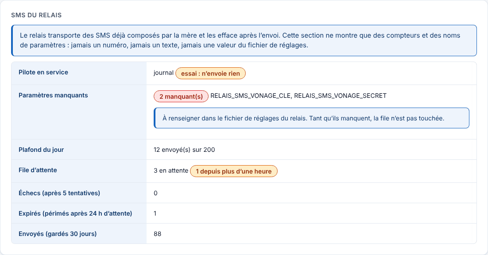
SmsRelaisTest et PanneauSmsTest sont écrits, non exécutés ; le scénario SMS1 du banc a été rejoué contre le relais de référence (25 vérifications sur 25 selon l’écart E5204), pas contre Laravel.Un patient répond au questionnaire de satisfaction depuis son téléphone, par un lien ou un QR. Le relais sert la page ; il ne lit aucune réponse.
https://sighcbg.exemple.bj/satisfaction/<jeton>.lien_revoque) : en ouvrir un nouveau.| Route du relais | Usage |
|---|---|
GET /satisfaction/{jeton}, GET /satisfaction/{jeton}/modele | La page publique et son modèle (seule page publique du relais). |
POST /satisfaction/{jeton}/reponse | Le dépôt d’une enveloppe chiffrée. |
POST /mere/satisfaction/publier, /revoquer, /relever, /acquitter | Réservées à la mère (secret partagé). |
RELAIS_SATISFACTION_DEBIT_PAGE (60 pages par minute et par adresse), RELAIS_SATISFACTION_DEBIT_DEPOT (10 dépôts), RELAIS_SATISFACTION_PLAFOND_JOUR (500 réponses par lien et par jour), RELAIS_SATISFACTION_ENVELOPPE_OCTETS_MAX (16 384), RELAIS_SATISFACTION_PUBLICATION_OCTETS_MAX (65 536), RELAIS_SATISFACTION_CONSERVATION_JOURS (30). Fuseau : Africa/Porto-Novo.
La clé privée de la satisfaction vit dans la base de la mère et suit ses sauvegardes chiffrées. Elle ne tourne pas encore : protéger les sauvegardes comme la clé de clinique.
Non vérifié sur l’hébergement réel : tests PHPUnit écrits mais non exécutés, page publique vue dans aucun navigateur réel, aucun déploiement cPanel
Le relais n’a aucun démon. Une seule ligne cron, chaque minute, déclenche toutes ses tâches :
* * * * * php /chemin/vers/apps/web/artisan schedule:run
| Commande | Fréquence | Rôle |
|---|---|---|
relais:surveiller | chaque minute | Marque le passage du cron (écran Hébergement), lève ou résout les alertes. |
relais:sms-envoyer | chaque minute, sans chevauchement | Envoie les SMS déposés par la mère, puis efface numéro et texte (14.5). |
relais:exporter | chaque jour à 03 h 00 | Export quotidien de la base du relais. |
relais:purger --oui | chaque jour à 03 h 10 | Purge de l’audit du relais, jamais des enveloppes. |
Le panneau superadmin, entrée Hébergement, dit l’heure du dernier passage du cron. Un cron arrêté bloque la surveillance et l’envoi des SMS.
Le panneau du relais range sa navigation dans une barre latérale verticale à gauche : le logo et le nom de la clinique, la devise en écriture manuscrite, les pages groupées (Supervision, Appareils et données, Sécurité, Exploitation), la page courante marquée en rouge, puis, en pied, le compte connecté, le bouton « Se déconnecter » et la version. Un filet rouge puis bleu sépare la barre du contenu, comme sur le poste. Le nom et la devise se lisent dans config/identite.php (surcharge : RELAIS_CLINIQUE_NOM et RELAIS_CLINIQUE_DEVISE du .env) ; les couleurs, rayons, espacements et polices viennent de la charte (public/css/jetons.css), et les polices sont embarquées dans public/fonts : le relais ne charge rien hors de lui-même.
Sous 1 024 pixels de large, la barre devient un tiroir : bouton « menu » en haut à gauche, fond assombri, fermeture par la croix, par un clic à côté ou par la touche Échap, qui rend le focus au bouton. Les tableaux défilent à l’intérieur de leur carte (jamais dans la page), les formulaires passent sur une colonne sous 640 pixels et les boutons et champs font 44 pixels de haut au toucher.
Les images ci-dessous ne montrent pas le relais réel. Elles sont rendues par apps/web/tests/rendu/rendre.php, qui compile les vrais fichiers Blade avec des données factices (aucun nom, aucun chiffre de la clinique), puis photographiées par capturer.cjs. Les composants Livewire (état, actualisation automatique, Alpine) n’y tournent pas : seule la mise en page est exercée.
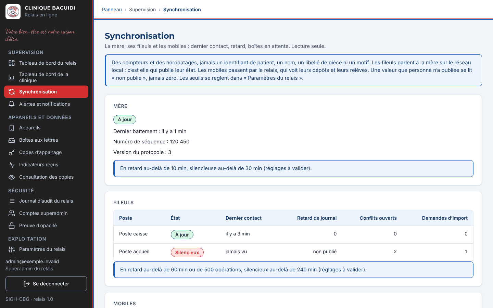
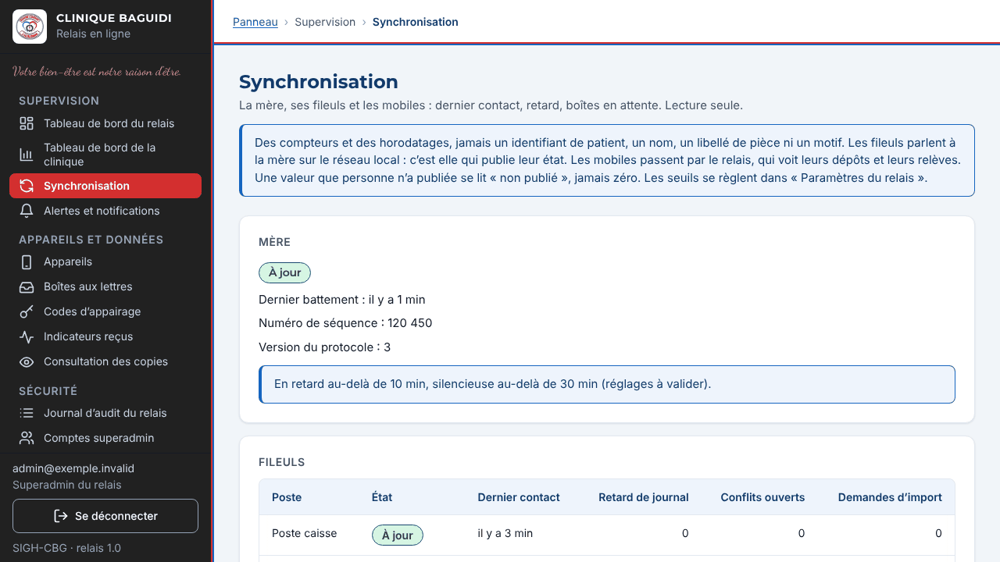
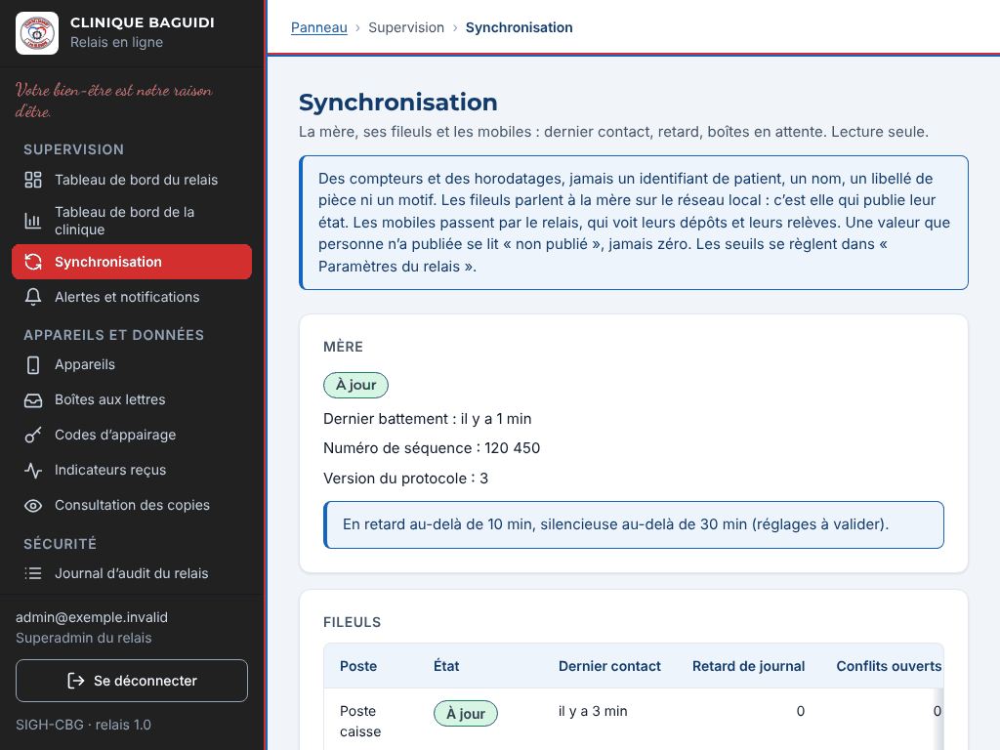
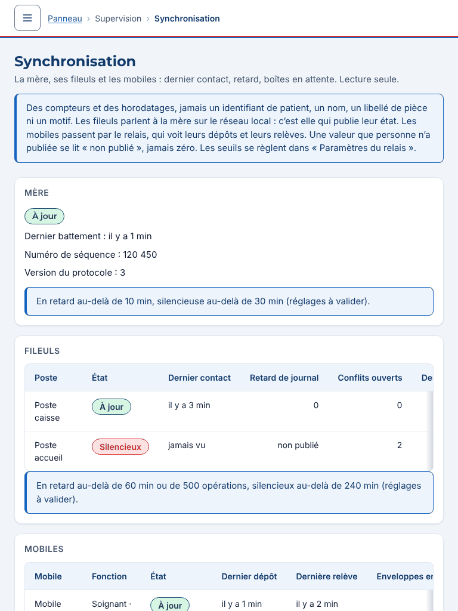
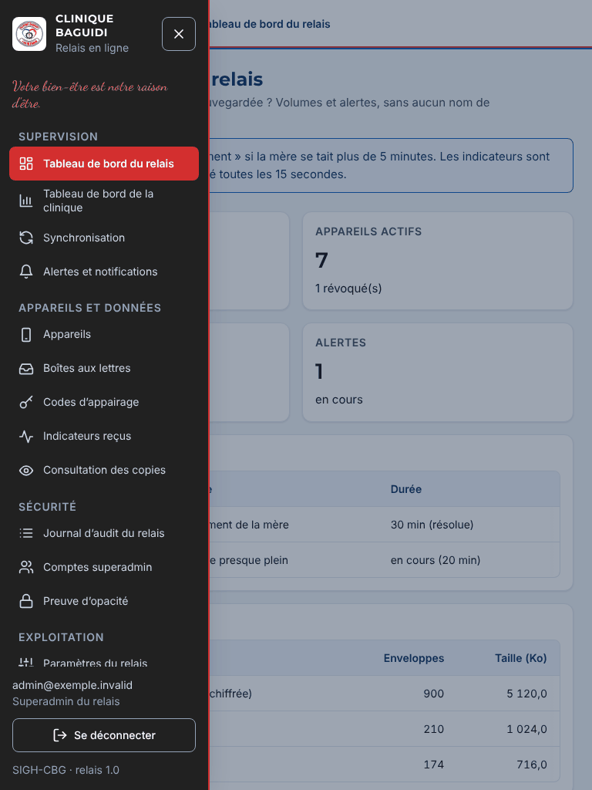
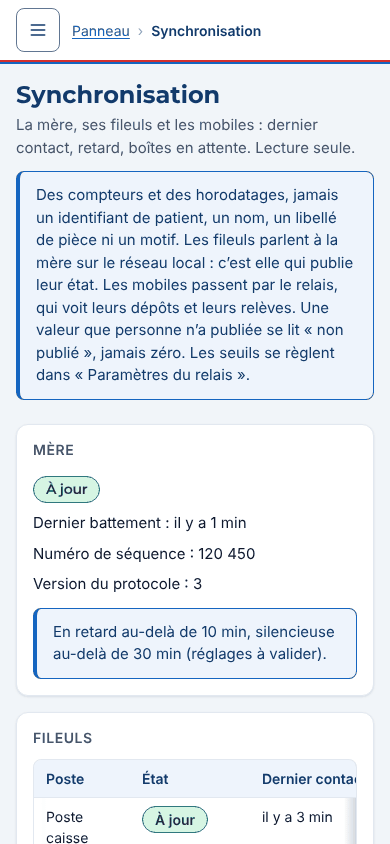
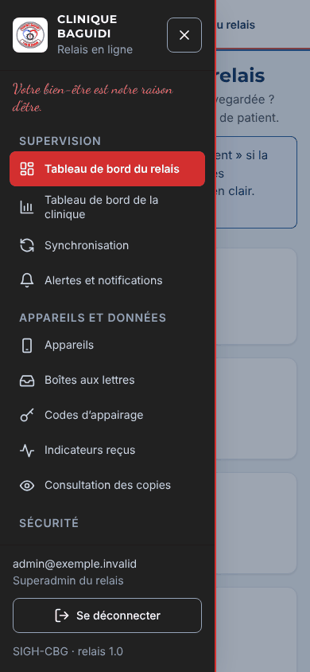
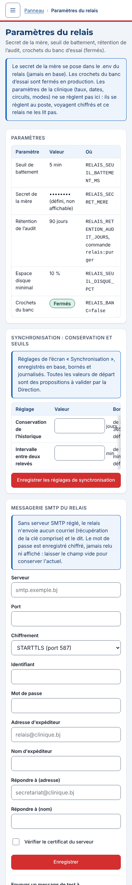
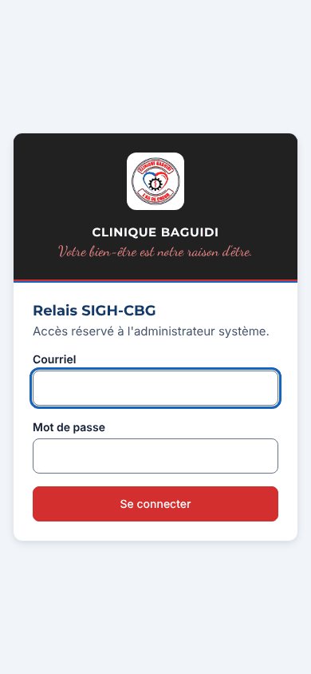
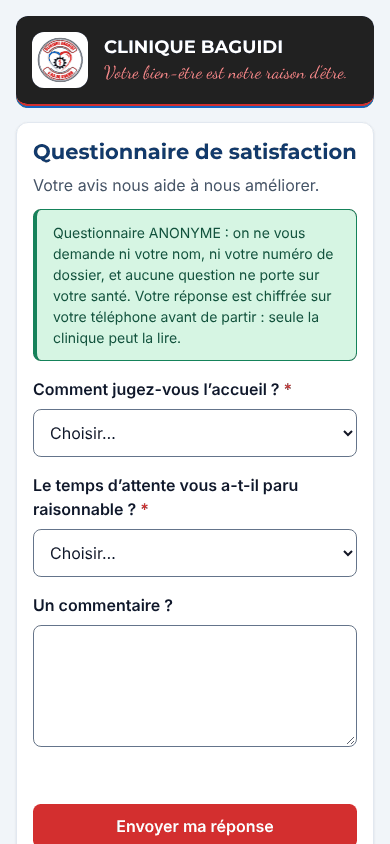
Mesures faites par script sur ces rendus, aux cinq largeurs (1 440, 1 280, 1 024, 768 et 390 pixels) et sur les dix-huit pages : aucun débordement horizontal de la page, aucun texte sous 14 pixels, toutes les cibles tactiles à 44 pixels de haut au moins sous 1 024 pixels, tiroir ouvert et fermé comme prévu (bouton, Échap, clic extérieur, focus rendu). Contrastes des couples de couleurs des jetons : tous au moins à 4,5 pour 1 pour le texte (le plus bas : texte blanc sur le rouge d’action, 4,98) et 3 pour 1 pour les contours et le focus.
Le panneau affiche le nom et la devise de la clinique et la version du relais : ils se lisent dans apps/web/config/identite.php, jamais dans une vue. Les valeurs de départ sont celles de l’identité de Baguidi ; une autre installation les surcharge dans le .env du relais (lignes présentes, commentées, dans production.env.exemple et .env.example : ne les renseigner que pour les changer).
| Variable du .env | Rôle | Défaut |
|---|---|---|
RELAIS_CLINIQUE_NOM | Nom court en tête de la barre latérale, sur la connexion et sur le questionnaire public. | CLINIQUE BAGUIDI |
RELAIS_CLINIQUE_DEVISE | Devise composée en écriture manuscrite (vide : rien ne s’affiche). | la devise de la clinique |
RELAIS_VERSION | Version affichée au pied de la barre (« SIGH-CBG · relais 1.0 »), à changer à chaque livraison du relais. | 1.0 |
jetons.cssToutes les couleurs, rayons, espacements, ombres et polices du panneau viennent d’un seul fichier engendré, apps/web/public/css/jetons.css. Il ne s’édite pas à la main : panneau.css et satisfaction.css n’emploient que des var(--…), et aucune couleur n’est écrite en dur dans une vue. Sources : docs/design/design-tokens.json (palettes, ombres, polices de la charte) et apps/poste/lib/core/jetons_shell.dart (neutres et voile, communs avec le poste).
node tools/baguidi/engendrer-jetons-relais.mjs # réécrit apps/web/public/css/jetons.css node tools/baguidi/engendrer-jetons-relais.mjs --verifier # échoue si le fichier diffère de ce que les sources donneraient node --test apps/web/tests/js/panneau-jetons.test.mjs # gardes du design du relais (ci-dessous)
design-tokens.json, ou le poste pour les neutres), jamais le CSS du relais.jetons.css n’est plus à jour, ou si un couple de couleurs passe sous le contraste AA (4,5 pour 1 le texte, 3 pour 1 les contours et le focus).public/css sur l’hébergement.Le test panneau-jetons.test.mjs (Node, sans dépendance) a un jumeau PHP, apps/web/tests/Unit/PanneauSansEnDurTest.php, qui fait la même garde anti-couleur en dur sous PHPUnit.
Le harnais ne démarre ni Laravel ni Livewire : tests/rendu/rendre.php compile les vrais fichiers Blade avec les seules briques illuminate/view, illuminate/events et illuminate/filesystem, installées hors du dépôt, puis capturer.cjs photographie et mesure les pages avec Chromium (module Node playwright).
mkdir /tmp/rendu-vendor && cd /tmp/rendu-vendor composer require illuminate/view illuminate/events illuminate/filesystem # hors du dépôt, jamais commité cd apps/web RENDU_VENDOR=/tmp/rendu-vendor/vendor php tests/rendu/rendre.php /tmp/rendu # 18 pages HTML node tests/rendu/capturer.cjs /tmp/rendu /tmp/rendu-png # captures et mesures, code 1 si une mesure échoue
Sortie attendue : « 18 pages écrites », puis « 92 mesures, 0 échec(s) ». Pour cette édition, le rendu a été relancé : 18 pages, 92 mesures, 0 échec, et les captures du chapitre ont été relues contre un rendu neuf. Le harnais a aussi servi à trouver un défaut, corrigé : une note posée dans une balise span chevauchait les noms des paramètres manquants de la carte « SMS du relais » (elle est désormais un bloc).
x-show sont masqués par le harnais, sans plus) et les routes ne tournent pas dans ces captures. Aucune installation Laravel complète n’a été possible ici (pas de vendor/ du relais), donc la suite php artisan test n’a pas été rejouée, PanneauSansEnDurTest non plus ; son jumeau Node, lui, s’exécute. Le harnais a été exécuté avec la version d’illuminate/view que Composer a installée au moment de l’essai, qui n’est pas forcément celle de Laravel 12 du relais.jetons.css n’ont pas été éprouvés sur l’hébergement.Chaque refus du logiciel se nomme. Lire le message : il dit la cause et le geste attendu.
| Situation | Ce que l’on observe | Que faire |
|---|---|---|
| Mère coupée | Les fileuls affichent « mère injoignable » et la pastille « hors ligne ». Les décisions restent « en attente de la mère ». | Redémarrer l’application sur la mère. Les files repartent seules. Ne réinitialiser aucun fileul. |
| Fileul hors ligne | Pastille « hors ligne » sur le poste ; dernier contact ancien sur Appareils et appairage. | Vérifier le réseau et l’adresse de la mère (Réseau local). Le poste continue de saisir ; sa file repart au retour. |
| Horloge décalée | « Horloge à vérifier » sur la supervision. | Corriger l’heure de Windows du poste concerné. |
| Disque plein | Contrôle « Disque » en alerte sur la supervision ; sauvegarde refusée. | Libérer de la place sur la mère. Ne jamais supprimer le dossier des données ni les sauvegardes récentes. |
| Conflit | Compteur de Conflits et doublons non nul. | Ouvrir l’écran, comparer les deux valeurs et trancher. |
| Code d’appairage refusé | « Code inconnu », « déjà servi » ou « expiré ». | Émettre un nouveau code sur la mère (usage unique, durée de validité réglée à la mère : 15 minutes par défaut). |
| Relais injoignable | Retard vers le relais qui grandit ; liaison en erreur sur Relais en ligne. | Cliquer sur Tester la liaison. Vérifier l’adresse, le secret et l’hébergement. Les opérations attendent, chiffrées. |
| Mère perdue | La machine mère ne démarre plus. | Suivre la restauration du chapitre 11.4. |
| Facture bloquée à la caisse | Refus FACTURE_EN_ATTENTE_DE_PRIX : une ligne attend son prix. | Poser le prix daté du jour de la pièce, ou régler le réglage de la section 6.5. |
| Décision refusée par la mère | COMPTE_NON_INSCRIT, COMPTE_INCONNU, COMPTE_ROLE_DIFFERENT, COMPTE_ARCHIVE. | Créer ou corriger le compte de l’agent sur la mère, puis refaire le geste sous son compte (10.2). |
| SMS refusé | plafond_atteint au journal des envois SMS, ou SMS_CONTENU_MEDICAL à la composition. | Attendre le jour suivant ou relever RELAIS_SMS_PLAFOND_JOUR ; retirer le mot interdit du modèle. |
| Aucune réponse en ligne | Carte Satisfaction en ligne : « Relais non configuré » ou dernière relève ancienne. | Vérifier la liaison avec le relais, puis cliquer sur Publier et relever maintenant. |
| Administrateur bloqué | Mot de passe perdu. | Un second administrateur réinitialise le mot de passe ; sinon, utiliser le code de secours (« Mot de passe administrateur perdu »). |
| Version de taux refusée | PAIE_DEJA_GENEREE : des bulletins sont déjà générés après la date d’effet. | Choisir une date d’effet postérieure au mois nommé dans le message (9.8). |
| Série de numérotation refusée | NUMEROTATION_RETROACTIVE ou VERSION_EXISTANTE. | Date d’effet au plus tôt aujourd’hui, une seule version par date (8.2). |
| Facture à une entreprise refusée | AIB_SITUATION_A_CHOISIR, AIB_SANS_BAREME ou FILLE_DEJA_FACTUREE. | Choisir la situation d’AIB, arrêter le barème (9.7), ou retirer la facture patient déjà réclamée (9.9). |
| SMS automatiques qui ne partent pas | Carte « Envois automatiques » : « Aucun tour n’a encore eu lieu » ou dernier tour avec des écarts ; SMS_CONSENTEMENT_ABSENT, SMS_CONSENTEMENT_REFUSE ou SMS_PATIENT_INCONNU à la composition. | Vérifier que l’occasion est ouverte aux Paramètres (famille « SMS automatiques », fermée par défaut), la passerelle ouverte, le relais joignable, puis le consentement du patient à son dossier (trois états, « non renseigné » ne suffit pas) et son téléphone (14.5). |
| SMS « expiré » | Statut « Expiré avant l’envoi » au journal des envois ; compteur « Expirés » du panneau du relais. | Le SMS est resté plus longtemps que RELAIS_SMS_VALIDITE_HEURES (plafond du jour atteint, panne). Il est abandonné, numéro et texte effacés : relever le plafond ou rétablir le fournisseur, puis recomposer si le message a encore un sens. |
| Paie : « N vacation(s) en attente de validation ne sont pas payées » | Note à l’écran de calcul, à l’écran de validation et sur le bulletin. | Faire valider les vacations par la mère (10.4) ; elles sont payées au calcul suivant, le bulletin déjà généré ne change pas (6.9). |
| Paie : chevauchement d’honoraire | Note « … s’ajoute à la prime … de la note NS 132 … les deux sont versés » (CHEVAUCHEMENT_PRIME). | Pas un refus. Confirmer que l’honoraire est un complément voulu, ou le retirer du régime individuel avant de valider (6.9). |
| Honoraire refusé | DOUBLE_PAIEMENT_PRIME : l’honoraire de régime égale une prime NS 132 déjà versée. | Retirer l’honoraire du régime individuel ou le remplacer par un complément d’un autre montant (6.9). |
| Planning refusé sur un fileul | validation_reservee ou champ_reserve. | Poser la vacation « à valider » ; la mère la valide (10.4). |
| Mère qui ne démarre pas | SECRET_ADMIN_FAIBLE : écran « ne peut pas démarrer en mode mère », ou activation refusée (« Le poste reste fileul »). | Le programme a été construit sans SIGH_ADMIN solide. Reconstruire l’installateur avec un secret de 16 caractères au moins (1.2), le réinstaller (11.7), recommencer. |
| Construction de l’installateur arrêtée | build_windows.bat : « ECHEC : la variable d’environnement SIGH_ADMIN n’est pas definie » (ou « refusee », ou « trop court »). | Définir SIGH_ADMIN (16 caractères au moins, pas admin-local), puis relancer (1.2). |
| APK de production refusé | Gradle : « SIGNATURE ANDROID ABSENTE » avec les valeurs manquantes nommées, ou « le fichier de clés … est introuvable ». | Renseigner android/key.properties ou les variables SIGH_KEYSTORE* (A.3). Aucun APK n’est produit : la clé de débogage n’est jamais utilisée. |
| Poste qui ne s’ouvre pas, méta illisible | META_ILLISIBLE au démarrage. | Ne rien supprimer ; restaurer le fichier de méta ou repartir de l’export (11.7). |
| Reprise d’un poste refusée | deja_repris, appareil_inconnu, code_expire, code_utilise, acces_refuse… | Lire le motif et le geste que l’écran donne (3.4) : reprendre le poste qui a remplacé l’ancien, ou générer un nouveau code. |
| Import de la liasse refusé | Un code (CLE_INCONNUE, TYPE_INVALIDE, TOTAL_*_INCOHERENT, GESTE_RESERVE, REGLE_SUR_LA_MERE…) et le chemin de la valeur fautive. | Corriger le document à l’endroit cité ; sur un fileul, importer sur la mère ; sans le geste, le demander à la Direction (9.10). |
| Relais : barre latérale absente ou page sans style | Page nue, sans couleurs ni polices ; ou, sous 1 024 pixels, bouton « menu » qui ne répond pas. | Vérifier que public/css/jetons.css, panneau.css, public/fonts et public/js/panneau.js ont été téléversés ; sans JavaScript le tiroir ne s’ouvre pas (14.8). Non vérifié sur un cPanel réel. |
| Fiche d’aide non validable | AUTEUR_NE_VALIDE_PAS, PROFESSIONNEL_REQUIS, PROFESSIONNEL_ABSENT, ou « Valider » absent. | Faire valider par une autre personne ; pour le bloc, le geste et le nom du professionnel ; sur un fileul, valider sur la mère (5.13). |
| Règlement en plusieurs versements refusé | VERSEMENT_REFERENCE_EXIGEE, VERSEMENT_REFERENCE_DEJA_UTILISEE, VERSEMENT_TYPE_INCONNU, VERSEMENTS_ECART_LIGNES, VERSEMENTS_DEPASSENT_DU… | Lire le motif : saisir la référence (unique), choisir un type et une modalité en service, faire couvrir exactement les prestations cochées (6.19). |
| Annulation d’un règlement refusée, ou commande absente | VERSEMENT_MOTIF_OBLIGATOIRE, VERSEMENT_DEJA_ANNULE, VERSEMENT_FACTURE_NORMALISEE ; ou aucun bouton « Annuler un règlement ». | Saisir le motif ; pour une facture normalisée, émettre une facture d’avoir ; sans le bouton, le geste versement_annuler n’est pas accordé au rôle (5.7) : le caissier n’annule pas. |
| Un type ou une modalité manque au guichet | Le caissier ne trouve pas « Mobile Money », ou aucune modalité n’est proposée. | Ouvrir Natures de facture, onglets Types et Modalités de versement : le type est archivé ou non « Proposé au guichet », ou la modalité est rattachée à un autre type (6.19). |
| Code patient en « /26 » en 2027 | Poste ou téléphone resté à l’ancienne version. | Mettre à jour la mère, puis le poste, puis synchroniser (12.4). |
Chaque commande a été relue dans le code du dépôt (scripts, fichiers de configuration, outils) : aucune n’est inventée. Elles se lancent depuis la racine du dépôt, sauf mention contraire. « Non vérifié » marque ce qui n’a pas été exécuté : l’installateur Windows, l’APK signé, l’hébergement réel (cPanel), les SMS réels, le boîtier CC300, le rendu réel du panneau Livewire et la suite PHPUnit du relais (php artisan test, dépendances Composer du relais non installées sur le poste de rédaction).
Ont, en revanche, été exécutées pour cette édition (livraison v34) : les cliquets de 13.5 (A = 0, B = 0, C = 0, D = 16, E = 0, G = 0, H = 0), le cliquet F des rôles, les tests du domaine (dart test de packages/domaine en entier : 5 164 tests), dart test de packages/sync_dart (182 tests), node --test de packages/rbac (22 tests), le contrôle d’identité (0 trace), node --test apps/web/tests/js/panneau-jetons.test.mjs (31 tests) et engendrer-jetons-relais.mjs --verifier (« jetons.css à jour »), deux fichiers de tests du poste (versements_poste_test.dart, 13 tests, et le contrôle des noms du manuel), l’extraction des références et la capture des écrans de ce manuel. npm run banc:sync (68 scénarios) a donné 673 vérifications sur 675 à la passe complète : deux scénarios, PAIR-P5 et IMPORT-IMP1, sont tombés pour des raisons d’environnement (port déjà occupé sur la machine de rédaction, dart absent du chemin de la passe), et rejoués seuls, avec VERS1, ils passent (56 vérifications sur 56). Ce banc joue la mère de référence Node ; VERS1 n’a pas été rejoué à cette édition contre la mère Dart (npm run banc:dart) ni contre Laravel. flutter test du poste en entier, le harnais de rendu du relais et la suite PHPUnit n’ont pas été rejoués pour cette édition.
git clone https://github.com/massenon/sighcbg.git
cd sighcbg
git checkout livraison/baguidi-v34 # la branche de livraison de cette édition
cd packages/domaine && dart pub get && dart test && cd ../.. cd packages/sync_dart && dart pub get && dart test && cd ../.. cd packages/rbac && node --test && cd ../.. node tools/baguidi/controle-identite.mjs # 0 trace d’une autre clinique node tools/baguidi/inventaire-en-dur.mjs --cliquet --famille=A,B,C,D,E,G,H # cliquets « valeurs en dur » (13.5) cd packages/domaine && dart test test/roles_en_dur_global_test.dart && cd ../.. # cliquet F : rôles node --test apps/web/tests/js/panneau-jetons.test.mjs # gardes du design du relais : couleurs en dur, adresses externes, contrastes, jetons.css à jour (14.8) node tools/baguidi/engendrer-jetons-relais.mjs --verifier # échoue si apps/web/public/css/jetons.css n’est pas ce que la charte engendre
cd apps/poste && flutter test dure une vingtaine de minutes, seule sur la machine ; cd apps/mobile && flutter test et cd apps/web && php artisan test (SQLite en mémoire) sont plus courtes. npm run banc:sync lance le banc de synchronisation de référence (mère, fileuls et mobiles Node) ; npm run banc:dart y met la mère, les fileuls et les mobiles Dart, et npm run banc:cible y ajoute le relais Laravel. Le banc lit ses droits dans packages/sync/banc/droits-banc.json (5.8).
cd apps/poste flutter pub get flutter run -d windows --dart-define=SIGH_MODE=fileul # poste fileul flutter run -d windows --dart-define=SIGH_MODE=mere # poste mère
Sans SIGH_ADMIN, le secret d’administration de la mère est admin-local en développement et en test seulement : une version de production (release) le refuse (1.2). SIGH_MODE n’amorce que le mode d’un poste neuf : le mode se décide ensuite dans les réglages du poste (Ce poste ➔ Activer le mode mère). Sous Linux, remplacer -d windows par -d linux.
cd apps/mobile flutter pub get flutter run # téléphone ou émulateur Android flutter run --dart-define=SIGH_RELAIS=https://sighnbg.cliniquebaguidi.com # pour viser un autre relais
Sans SIGH_RELAIS, l’application vise l’adresse d’exemple https://relais.exemple.bj. Le build de débogage n’est pas soumis à la signature.
cd apps/web composer install cp .env.example .env php artisan key:generate # renseigner DB_PASSWORD et RELAIS_SECRET_MERE dans .env php artisan migrate php artisan relais:superadmin votre@courriel.bj --mot-de-passe='un-mot-de-passe-long' # 12 caractères au moins php artisan serve # http://127.0.0.1:8000 php artisan test # tests du relais, SQLite en mémoire
Domaine retenu : https://sighnbg.cliniquebaguidi.com, dont la racine web est le dossier public/. Non vérifié sur l’hébergement réel : L’ensemble des commandes de cette section n’a pas été exécuté sur le serveur de la clinique.
cd apps/web
composer install --no-dev --optimize-autoloader
php artisan key:generate --show # affiche la clé : à coller dans APP_KEY, ne rien écrire dans le dépôtapps/web sur l’hébergeur, créer la base PostgreSQL et son utilisateur dans cPanel.apps/web/production.env.cliniquebaguidi en .env, puis renseigner les champs ci-dessous.php artisan migrate --force php artisan relais:superadmin <courriel-à-renseigner> --mot-de-passe='un-mot-de-passe-long'Le courriel du compte du panneau est à renseigner par la clinique : il n’est pas fourni. Le mot de passe compte 12 caractères au moins (la commande refuse sinon, de même que le changement de mot de passe au panneau).
* * * * * php /chemin/vers/apps/web/artisan schedule:run * * * * * php /chemin/vers/apps/web/artisan queue:work --stop-when-empty
Champ du .env | Valeur | À faire |
|---|---|---|
APP_KEY | vide | Coller la sortie de key:generate --show. |
DB_DATABASE, DB_USERNAME | CPANEL_relais | Remplacer CPANEL par l’utilisateur cPanel : noms préfixés. |
DB_PASSWORD | vide | Mot de passe de la base créée dans cPanel. |
RELAIS_SECRET_MERE | vide | Texte long et aléatoire. Le même texte se saisit à « Activer la mère ». |
MAIL_USERNAME, MAIL_FROM_ADDRESS, MAIL_REPLY_TO_ADDRESS | contact@cliniquebaguidi.com | Adresse arrêtée par la Direction le 17/11/2026 (8.4). Créer la boîte dans cPanel. |
MAIL_PASSWORD | vide | À renseigner : le mot de passe de la boîte créée dans cPanel. |
RELAIS_SMS_VALIDITE_HEURES | 24 | Un SMS en attente depuis plus longtemps est abandonné (« expiré », numéro et texte effacés). Au moins 1 (14.5). |
RELAIS_SMS_PILOTE | journal | Reste « journal » (aucun envoi) tant que le fournisseur n’est pas choisi : passer à vonage ou twilio (14.5). |
RELAIS_SMS_VONAGE_CLE, RELAIS_SMS_VONAGE_SECRET ou RELAIS_SMS_TWILIO_SID, RELAIS_SMS_TWILIO_TOKEN, et RELAIS_SMS_EXPEDITEUR (ou RELAIS_SMS_TWILIO_SERVICE) | vide | À renseigner sur le serveur, selon le fournisseur retenu : jamais dans le dépôt. |
RELAIS_CLINIQUE_NOM, RELAIS_CLINIQUE_DEVISE, RELAIS_VERSION | absentes (commentées dans production.env.exemple) | Facultatives : le panneau affiche l’identité de Baguidi par défaut. À renseigner seulement pour la changer, et RELAIS_VERSION à chaque livraison du relais (14.8). |
APP_DEBUG | false | Ne jamais passer à true en production. |
Le fichier .env ne va jamais dans le dépôt ni dans un message. Le modèle production.env.cliniquebaguidi ne contient aucun secret.
cd apps\poste
set SIGH_ADMIN=<secret-d-administration-de-16-caracteres-au-moins>
build_windows.bat
rem résultat : build\installer\SIGH_Poste_Setup_<version>.exe et son .sha256
Prérequis : Flutter (Windows Desktop), Visual Studio 2022 (C++) et Inno Setup 6. Le script s’arrête à la première étape qui échoue, en la nommant (chapitre 1).
SIGH_ADMIN (16 caractères au moins, jamais admin-local) avant de lancer build_windows.bat. Sans elle, ou si elle est faible, le script s’arrête en la nommant ; il la transmet à la compilation (--dart-define=SIGH_ADMIN) et ne l’affiche jamais. Ce secret sert à la console de la mère et au code de reprise (3.4). Le conserver hors du dépôt (gestionnaire de secrets de la clinique) : le perdre oblige à reconstruire le poste. Éviter &, %, ^ et les guillemets dans sa valeur.
SIGH_ADMIN solide) refuse de démarrer en mère et affiche le refus SECRET_ADMIN_FAIBLE ; le mode fileul n’est pas concerné. En développement et en test, le repli admin-local subsiste.pubspec.yaml ; le numéro que le poste écrit dans ses exports vient de SIGH_VERSION (0.1.0 par défaut). Les deux ne se suivent pas automatiquement.L’APK de production est signé par la clé de la clinique. Créer d’abord le fichier de clés (une seule fois, hors du dépôt, avec l’identité de la clinique et non d’une personne), puis le sauvegarder, puis renseigner apps/mobile/android/key.properties (modèle : key.properties.exemple, ignoré par git) ou les variables d’environnement SIGH_KEYSTORE, SIGH_KEYSTORE_PASSWORD, SIGH_KEY_ALIAS, SIGH_KEY_PASSWORD. Procédure complète : docs/guides/SIGNATURE-ANDROID.md.
keytool -genkeypair -v -keystore <chemin-hors-depot>/sigh-mobile.jks \ -alias <alias-a-choisir> -keyalg RSA -keysize 2048 -validity 10000 # « keytool » demande deux mots de passe (fichier, clé) : longs, aléatoires, jamais dans le dépôt # sauvegarde : le fichier ET ses mots de passe, en deux lieux sûrs au moins ; contrôle : keytool -list -keystore <copie>
cd apps/mobile # renseigner android/key.properties (modèle key.properties.exemple : storeFile, storePassword, keyAlias, keyPassword) # ou : SIGH_KEYSTORE, SIGH_KEYSTORE_PASSWORD, SIGH_KEY_ALIAS, SIGH_KEY_PASSWORD (le fichier l’emporte sur l’environnement) flutter build apk --release \ --dart-define=SIGH_RELAIS=https://sighnbg.cliniquebaguidi.com \ --dart-define=SIGH_VERSION=1.0.0+1
Adapter SIGH_VERSION au numéro de la livraison. Sans SIGH_RELAIS, l’application vise une adresse d’exemple. Le fichier produit est build/app/outputs/flutter-apk/app-release.apk ; apksigner verify --print-certs app-release.apk (outil du SDK Android) en contrôle la signature.
assembleRelease, bundleRelease) échoue avec « SIGNATURE ANDROID ABSENTE » en nommant les valeurs manquantes (et dit aussi si le fichier de clés est introuvable) ; il n’est plus jamais signé avec la clé de débogage. Le build de débogage (flutter run) n’est pas concerné.INTERNET est déclarée dans le manifeste de production (android/app/src/main/AndroidManifest.xml) depuis la livraison v30 ; un APK de production joint donc le relais.key.properties, *.jks, *.keystore). Clé divulguée : n’importe qui peut signer une fausse mise à jour ; la remplacer et prévenir la Direction.Non vérifié : aucun build Android n’a été exécuté dans le cadre de ce manuel (pas de SDK Android) ; la logique de signature a été éprouvée dans un projet Gradle isolé (échec sans clé, échec si le fichier est introuvable, passage avec une clé complète)
node tools/baguidi/mesurer-quota-relais.mjs --magasin <chemin> --fichiers <chemin> --quota-gio <n> node tools/baguidi/demo-liasse.mjs --verifier node tools/baguidi/controle-identite.mjs node --test apps/web/tests/js/panneau-jetons.test.mjs node tools/baguidi/engendrer-jetons-relais.mjs --verifier
Le rendu de contrôle du panneau (harnais tests/rendu) se lance depuis apps/web ; sa procédure est en 14.8. Non vérifié : php artisan test, donc PanneauSansEnDurTest, SmsRelaisTest et PanneauSmsTest, écrits mais non exécutés.
cd apps/poste && SIGH_CAPTURES=../../docs/manuels/src/admin/images/brut flutter test test/capture_admin_test.dart && cd ../.. dart --packages=apps/poste/.dart_tool/package_config.json docs/manuels/src/admin/outils/extraire_references.dart > docs/manuels/src/admin/references.json node docs/manuels/src/admin/generer.mjs docs/manuels/src/admin docs/manuels/Manuel-administrateur-SIGH-CBG.pdf
C’est docs/manuels/src/admin/generer.mjs qui sert ce manuel : il remplit les annexes B et C depuis references.json et annote les captures depuis images/brut/cibles.json. Le générateur commun docs/manuels/generer.mjs est celui du manuel utilisateur.
Les gestes réservés déclarés dans packages/domaine/lib/src/droits/gestes_reserves.dart, avec leurs rôles d’origine. Liste extraite du code.
| Identifiant | Geste | Module, écran | Rôles d’origine |
|---|
Les paramètres déclarés dans packages/domaine/lib/src/parametres/definitions.dart, avec leur défaut semé (version 0). La valeur en vigueur se lit dans Paramètres système ➔ Paramètres. Liste extraite du code.
| Appairage | Rattachement d’un poste ou d’un téléphone à la mère par un code à usage unique (durée de validité réglée par la mère : 15 minutes par défaut, mere.validiteCodeAppairageMinutes). |
| Archivage | Suppression logique : la fiche quitte les listes, reste restaurable depuis la Corbeille (RG-14). |
| Borne de saisie | Valeur au-delà de laquelle le téléphone refuse une saisie comme improbable. Réglable dans une enveloppe (plancher, plafond) que la clinique ne franchit pas (6.16). |
| Cliquet | Contrôle automatique qui échoue si une valeur écrite en dur apparaît, ou si un plafond n’est pas abaissé quand un site disparaît (13.5). |
| Clé de clinique | Secret qui chiffre tout ce qui quitte la mère : relais, sauvegardes, mobiles. Jamais envoyée au relais. |
| Consentement SMS | Réponse du patient à « accepte-t-il les SMS ? », portée à son dossier en trois états (accepte, refuse, non renseigné) ; aucun SMS ne part sans « accepte » (14.5). |
| Dépôt | Geste fait sur un fileul et transmis à la mère, qui le rejoue sous le rôle de son auteur. |
| Famille R | Collections de configuration : la mère seule écrit, les fileuls reçoivent. |
| Fileul | Poste de travail rattaché à la mère, avec sa base locale chiffrée et sa file d’envoi. |
| Geste transverse | Geste réservé qui ne dépend d’aucun module (module « * ») : il remplace une ancienne liste de rôles écrite dans le code. |
| Geste réservé | Droit accordé par rôle sur un geste qui engage un professionnel nommé. |
| MECeF | Mécanisme électronique de certification des factures, par boîtier physique ou e-MECeF. |
| Jetons (charte) | Variables CSS de la charte Baguidi (couleurs, rayons, espacements, polices), engendrées dans apps/web/public/css/jetons.css à partir de la charte du dépôt : la seule source des couleurs du panneau du relais (14.8). |
| Mère | Poste serveur de la clinique : service de synchronisation, base de référence, console d’administration. |
| Relais | Site web opaque qui transporte les enveloppes chiffrées et garde la copie hors site. |
| Reprise d’identité | Remplacement d’un poste fileul : un code émis par la mère remet au poste neuf les plages de numéros et les baux de l’ancien, qui est révoqué (3.4). |
| Secret d’administration | Secret compilé dans le programme (SIGH_ADMIN, 16 caractères au moins) avec lequel les postes parlent à la console de la mère ; sans lui, une version de production ne démarre pas en mère (1.2). |
| Contre-passation | Écriture ou ligne de journal inverse qui annule sans effacer : un règlement en plusieurs versements s’annule ainsi, par versement, motif obligatoire (6.19). |
| Valeur d’attente | Valeur semée d’un réglage, reprise du code d’avant et marquée « à confirmer » : elle s’applique tant qu’aucune version datée n’est posée, et chaque fois qu’une valeur est illisible ou hors bornes. |
| Surcharge d’écran | Droit réglé pour un écran précis ; il l’emporte sur le droit du module. |
| Versement | Une partie du règlement d’une facture, d’un type donné (espèces, Mobile Money…) : ligne de journal en ajout seul, numérotée VRS-AAAA-NNNNN, qui ne se corrige que par une contre-passation (6.19). |
| Version datée | Nouvelle valeur d’un paramètre, effective à partir d’une date ; l’ancienne reste lisible. |